RAIL 2024Original text
Early Child Language Resources and Corpora Developed in Nine African Languages by the SADiLaR Child Language Development Node
This is the original text of the paper. Translations are linked above.
Proceedings of the Fifth Workshop on Resources for African Indigenous Languages @ LREC-COLING 2024.
Original text, shown under its licence (CC BY-NC 4.0). Reuse allowed with attribution, non-commercial only. The translations on this site are by Ernst van Gassen (Arktos AI Lab).
Plain text for reuse, with its licence: English · LICENSE
Affiliations
Michelle Jennifer White1,2, Frenette Southwood2, Sefela Yalala3 and the South
African Communicative Development Inventory team*
University of Plymouth1, Stellenbosch University2, Northwestern University3
E-mail addresses removed for privacy. They are in the original PDF.
Abstract
Prior to the initiation of the project reported on in this paper, there were no instruments available with which to measure the language skills of young speakers of nine official African languages of South Africa. This limited the kind of research that could be conducted, and the rate at which knowledge creation on child language development could progress. Not only does this result in a dearth of knowledge needed to inform child language interventions but it also hinders the development of child language theories that would have good predictive power across languages. This paper reports on (i) the development of a questionnaire that caregivers complete about their infant's communicative gestures and vocabulary or about their toddler's vocabulary and grammar skills, in isiNdebele, isiXhosa, isiZulu, Sesotho, Sesotho sa Leboa, Setswana, Siswati, Tshivenda, and Xitsonga; and (ii) the 24 child language corpora thus far developed with these instruments. The potential research avenues opened by the 18 instruments and 24 corpora are discussed.
Keywords
Communicative development inventory, child language, gesture, vocabulary, grammar
1. Introduction
The dearth of instruments with which to measure early child language development in African languages and of child language corpora in these languages need attention for three main reasons. The first is that life chances are influenced by educational attainment, which requires good literacy, and that the latter is built on adequate language skills (Catts et al., 1999). It is pertinent to identify children who have poor language skills early so that they can receive the intervention necessary for the improvement of said skills (Fricke et al., 2013), and for such identification, one needs reliable measuring instruments and developmental norms. The second reason is related to the first: Child language intervention programmes need to be evidence-based and take typical child language development into account. To gain contextually relevant knowledge on typical child language development, we require instruments with which to measure and track development, and corpora to analyse so that we can answer our child language related research questions. The third reason is that most of what we know about child language development is based on research of English and other European world languages (such as German and French), and that this research (which could present a skewed picture of child language development) is what informs theories of child language development (Kidd and Garcia, 2022). To generate knowledge on child language development in African languages with which to test the generalisability of existing child language theories, we need appropriate child language measuring instruments and sizeable child language corpora in African languages.
In this paper, we report on instruments and corpora developed for isiNdebele, isiXhosa, isiZulu, Sesotho, Sesotho sa Leboa, Setswana, Siswati, Tshivenda, and Xitsonga by a multilingual, multi-site team of linguists, speech-language therapists, and African language specialists. Specifically, one infant and one toddler version of a child language assessment instrument - the MacArthur-Bates Communicative Development Inventory (CDI, Fenson et al., 2007) - was developed for each of these nine official spoken African languages of South Africa, and (ii) 24 corpora were built, or are in the process of being built, with these instruments. These corpora comprise the infant and the toddler CDI data as well as transcribed language samples collected from toddlers who speak one of these nine languages. We also discuss the research possibilities these instruments and corpora afford us.
2. The South African Communicative Development Inventories
The MacArthur-Bates CDI was first developed for American English (Fenson et al., 1993) but has since been adapted for more than 100 languages from different language families (see https://mb-cdi.stanford.edu/adaptations.html), under license of, and following the guidelines of, the MacArthur-Bates Board in order to render culturally and linguistically appropriate adaptations rather than mere translations. There are two age versions of the CDI, one for infants (8 to 18 months) and another for toddlers (16 to 30 months), with the 16- to 18-month overlap being intentional. CDIs are caregiver reports: The parents or other primary caregivers check off on a list which language items a child has acquired. Both the infant and toddler CDIs focus on vocabulary. Words from more than 20 semantic domains are listed alphabetically (see Table 2 further below for the domains included in the South African CDIs). Caregivers are asked to indicate which of these words the child knows. On the infant version, a list of approximately 400 words (see Table 2 for precise numbers) can be marked off for either comprehension, or comprehension and production. On the toddler version, a list of approximately 700 words can be marked off, for production only. The infant CDI also contains checklists for gestures, play routines, actions, and comprehension of commonly used phrases (see Section 2.2.1), whereas the toddler CDI has grammar checklists for morphology, word combinations, and sentence complexity (see Section 2.2.3).
2.1 Method for Developing the Communicative Development Inventories
2.1.1 General Protocol
Following the MacArthur-Bates Board's guidelines, research teams have utilised a range of methods to adapt CDIs to new languages (see Jarůšková et al., 2023). Many teams make use of Wordbank (Frank et al., 2017), an open access repository of CDI data, to examine which words other CDIs have included. Due to Wordbank only having come into being after the commencement of the current study, this approach was not applied. Another common way to begin the adaptation process is to translate an existing CDI into the target language (Jarůšková et al., 2023), which is subsequently expanded by adding words that are culture-specific and/or language-specific. We began by translating the American English CDI to the target languages. Following, for example, Anđelković et al. (2017) for Serbian and Jackson-Maldonado et al. (1993) for Mexican Spanish, we made use of caregiver interviews to uncover which actions, gestures, and words in the translation might be irrelevant or missing. We also employed focus group discussions and spontaneous language samples to the same effect, as discussed below.
Due to the nature of the differences between the grammars of English and African languages, the grammar sections could not use a translation of the American English CDI as their point of departure. As we will explain below, we consulted the Kiswahili and Kigiryama CDIs (Alcock et al., 2015), the limited literature available on early language development in Bantu languages, caregivers of young children speaking the relevant languages, focus groups, and our recordings of toddlers' spontaneous language samples to create a first version of the grammar section.
The main aims of this pre-pilot phase were to check for completeness and eliminate cultural bias before piloting the CDIs. Below, we discuss the steps that were followed during the adaptation process in more detail.
2.1.2 Testing the First and Second Draft Versions of the CDI
As a first step, the American English CDI was translated by three mother tongue speakers per language for isiXhosa, Sesotho, Setswana and Xitsonga. Initially, funding could only be secured for four languages, and these four were selected because we had an existing network of mother-tongue-speaking researchers available for them. The adaptation process for the remaining five languages (isiZulu, isiNdebele, Sesotho sa Leboa, Siswati and Tshivenda) was initiated two years later, after the CDIs for the first four languages had been piloted twice, and once further funding had been secured. A main consideration was to harmonise all nine CDI language versions so that they would be comparable and allow for crosslinguistic comparisons and data pooling during future research. Considering that the first four languages' adaptations performed very well during the two pilots, the adaptation of the CDI for the last five languages did not start with a translation of the American English CDI but rather with that of a more closely related language's CDI: For the Nguni languages (isiZulu, isiNdebele and Siswati), the isiXhosa adaptation of the CDI was translated; Sesotho sa Leboa used the Sesotho and Setswana CDIs; and Tshivenda used the Xitsonga CDI. Harmonisation across languages commenced before the first pilot of the first four languages and was further refined after both the first and second pilots.
As indicated above, two rounds of piloting were completed for the first four languages, but only one for the remaining five languages because they were closely based on the four already piloted language versions of the CDI. In the first pilot, each of the preliminary adaptations of the CDIs were completed by 40 caregivers of infants 8 to 18 months old and another 40 caregivers of toddlers 16 to 32 months old. They completed paper copies of the CDIs with the help of fieldworkers who were recruited via Early Childhood Development centers and researcher networks. After the first pilot, some items were removed or replaced based on the caregiver responses.
For the second pilot of the first four languages and the only pilot of the last five languages, online CDIs were used instead of paper-based versions. The online CDIs were built on Qualtrics (Provo, Utah), eliminating possible human error in data capturing. Additionally, the Qualtrics application allowed for the collection of data without the need for internet connectivity, which is a necessity in rural areas and during the frequent electricity blackouts South Africa has been experiencing.
Data from caregivers of more than 100 infants and 100 toddlers per language was collected (see Tables 4 and 5 for exact numbers per language) during Pilot 2 of the first four languages and the only pilot of the remaining five, again with the assistance of fieldworkers, either face-to-face or (when COVID-19 social distancing regulations were in place) telephonically. This was done for respondent comfort, given that many caregivers were not able to complete the CDI themselves due to low literacy levels or technology-related limitations.
2.1.3 Development of the Actions and Gestures Section (Infant CDI)
Actions and gestures that are on the American English CDI were used as a starting point for this section. Those items which were not relevant to our context were excluded or modified after translation, and actions and gestures typically used by speakers of the target languages were added. To make the items relevant to the South African context, some had to be adapted. For example, rather than asking whether the child waved to say hello, as in the American English CDI, we asked whether the child used a gesture to greet such as waving, thumbs up, high five or something culturally similar. This was done to cover the variation that exists in children's first social gestures for greeting across the languages concerned. Imitating adult actions were also changed to be more culturally and/or contextually appropriate. For instance, brooms are used more often for cleaning than vacuum cleaners, therefore sweeping was added to the American English CDI's question about whether the child imitates adults by attempting to mop or vacuum clean.
2.1.4 Development of the Words Section
The translated CDIs were presented to individual language practitioners of each language (e.g., linguists or speech-language therapists) whereafter two focus groups per language were consulted. They consisted of professionals who work with children as well as parents of young children. The feedback from the language practitioners and focus groups led to the removal and addition of some words and/or synonyms. Words which are not relevant to everyday South African life, such as snow suit, were removed, whereas words had to be added when, for instance, a single word on the American English CDI could be translated in multiple ways. Consider, for example, porridge, which is a staple food for many South Africans. Various types of porridge (e.g., maize meal porridge or oatmeal porridge) can be referred to with one word, porridge, in English but require several words in the African languages concerned, depending on its ingredients and consistency, including papa, mahleu, motoho, or mabele in Sesotho, and motogo, bogobe or phaletšhe in Setswana. All these words for porridge were added to the word lists. When adapting the word lists, dialects or varieties of the specific languages were also considered. For this reason, the focus groups comprised of people speaking various dialects or varieties of the language in question and focus group members were requested to point out those items which were highly dialectal or variety specific.
Subsequently, 30-minute samples of naturally occurring spontaneous language were collected from six toddlers (27 to 32 months) per language. Words that were found to occur in the language samples but were not yet on the word lists were added.
Although the same protocol was followed for all languages in an attempt to facilitate crosslinguistic comparisons, the final number of words varied across languages (see Table 2). This is due, for instance, to some words being polysemous in one language while several related words were required in another.
2.1.5 Development of the Grammar Section (Toddler CDI)
Only a limited number of studies have been conducted on grammar development in children learning Bantu languages, yielding very little available empirical evidence. Such evidence on early acquired grammatical constructs was available for only a few languages (see Demuth, 2003 for a summary), namely Sesotho (e.g., Connelly, 1984; Demuth, 1992), Siswati (Kunene, 1979), isiZulu (Suzman, 1991) and Setswana (Tsonope, 1987; 1993). Thus, the grammar section had to be developed based on this limited existing literature, the language samples referred to above, and the Kiswahili and Kigiriama CDIs (Alcock et al., 2015). These were the only published full CDIs that had been adapted into African languages at the time. The grammar section of the Kiswahili/Kigiriama CDIs appeared to perform well (Alcock et al., 2015) and were thus deemed reliable for use as a starting point. Their structure was followed, yielding grammar sections which each consisted of four subsections, namely small parts of words, word complexity, word combinations, and sentence complexity (see Table 3 for more information). The language professionals and focus groups commented on the preliminary items and were encouraged to suggest examples of constructions that children acquiring the languages are likely to hear or to produce.
Across the languages, there were many similarities but also some distinct grammatical differences. The decision was made to include additional, language-specific items (more than would be needed in the final version of the CDI) for the first pilot, even if the type of construction did not occur in all the languages concerned. This was done to ascertain which items would be most effective because so little data is available on these languages. In Sesotho and Setswana, for instance, there is irregular verb inflection in the past tense, therefore items pertaining to this were included for these two languages only.
A feature common to Bantu languages is that of having several noun classes (which take the form of prefixes), with different numbers in each language. Moreover, some languages and language varieties have pre-prefixes that do not exist in others. Examples of these items that contain structures that would likely be part of a child's early grammar had to be found. The main source of these examples were the language professionals and focus groups.
After the first pilot of the first four languages, the grammar items were improved based on the caregiver responses, and the instructions were clarified to make it easier for caregivers to understand the questions about grammar. Feedback from fieldworkers was especially important to determine what might have been confusing for the caregivers.
The second pilot was conducted with caregivers of 100 toddlers and indicated that the items were suitable; the items correlated significantly with each other and with the child's age and the child's vocabulary size, the latter measured by the word section of the CDI.
The grammar sections of the second group of languages (isiNdebele, isiZulu, Sesotho sa Leboa, Siswati, and Tshivenda), were based on the first four languages', with some adaptation. Their examples came from focus group discussions with caregivers and language professionals and from natural child language recordings. Some items were substituted because they relate to aspects that are irregular in one language but not in another, for instance; or the relevant structure differed across languages. For example, Tshivenda uses a prefix to mark past tense whereas the other languages use a suffix. These grammar sections were piloted once, with 100 caregivers per language.
2.2 Content of the Final Versions of the Communicative Development Inventories
Details of the final versions of the CDIs are summarised in the tables below. Table 1 indicates the five subsections of the actions and gesture section, and the number of items in each subsection. These subsections are (i) first communicative gestures, e.g., deictic gestures such as pointing; (ii) games and routines, e.g., clapping hands, (iii) actions with objects, e.g., drinking from a cup; (iv) pretending to be a parent, which included symbolic gestures and play schemes with a 'baby', e.g., dressing or trying to dress a doll or soft toy; and (v) imitating other adult actions, e.g., writing with a pen/pencil.
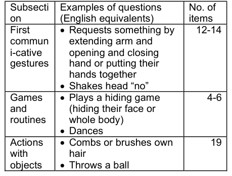
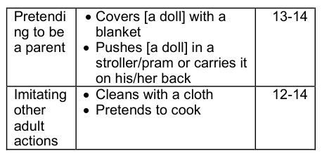
Table 1: Number and types of items in the action and gestures sections
Table 2 provides the mean number of words per semantic domain on the Infant forms and the Toddler forms of the CDI. These differ somewhat across languages, as explained in Section 2.1.5.
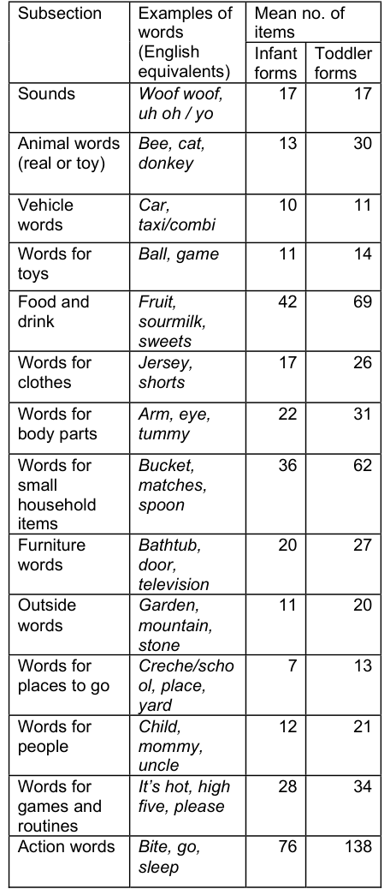
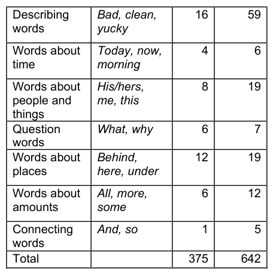
Table 2: Number of items per semantic domain of the words section, average across languages
The grammar section of the CDIs is divided into four subsections. The first concerns noun and verb affixes, representing both singular and plural noun classes and past and present tense markers. These are presented in the form of yes/no questions. For example, caregivers are asked the equivalent of "Has your child started adding endings to words to show that an event has already happened?", with two or three language-appropriate examples provided.
The second subsection asks in more detail about the use of noun class prefixes and verb affixes. The first 10 noun classes are covered as singular and plural pairs, e.g., Class 3 (singular) and Class 4 (the plural of Class 3), but there are only 8 items because, for some of the languages, (i) Classes 8 and 10 have the same prefixes (with nouns in Class 10 occurring more frequently), and (ii) Class 9 has a null prefix and/or occurred less frequently in our language samples and was thus not included. The items are presented as a trio of words with increasing complexity, i.e., a noun stem with no prefix (for instance, in isiXhosa fazi '(married) woman'), a noun stem with a 'shadow vowel' or place holder prefix (mfazi), and a noun stem with a full, correct prefix (umfazi); see Tsonope (1993) and Demuth (1988) for a discussion of these three stages of noun class prefix acquisition. Noun stems that exemplify each item were selected based on word frequency in the language samples. This subsection also asks about the use of verb affixes. These are presented as a pair or trio of words, again in increasing complexity, i.e., a verb stem with no affix, a verb stem with the full affix, and in some cases a middle option of a partial or incorrect affix.
The third subsection asks the caregiver the equivalent of "Has the child started to combine words to form short sentences?", with two language-appropriate examples provided. If the caregiver responds affirmatively, they are asked to provide three examples of the longest sentences they heard the child say that week.
The last grammar subsection asks about the length and complexity of sentences. These are given as an example with two to four options of increasing complexity. The caregiver is asked to select the form that most closely resembles what their child would say - for example, "I want bread" or "I want bread and a drink".
The number of items per subsection is presented in Table 3, along with an indication of the types of constructions that the questions ask about.
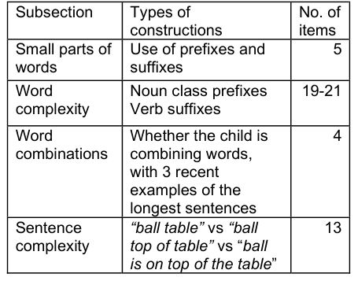
Table 3: Number and types of items per category of the final grammar sections
3. Child Language Corpora
We developed three types of corpora, namely one corpus for each of the nine languages containing the caregiver responses to the infant CDIs and another containing those to the toddler CDI, as well as a corpus consisting of orthographically transcribed language samples (and their audio recordings) for six of the nine languages. Each of these types of corpora is briefly discussed below.
3.1 Infant CDI Corpora
The infant CDI corpora consist of the answers that the caregivers gave to the CDI items on early communicative gestures and actions and on words that the child either comprehends or comprehends and produces, as well as background information on each infant for which the CDI was completed. The background information was on the infant's birth and medical history, general health, childcare, exposure to languages, household composition, and household resources. The data of 988 infants (approximately 110 per language) are included in the form of one searchable Excel file per language. This file contains instructions for the user and separate tabs for gestures and actions and for the vocabulary items. Table 4 contains the characteristics of the completed CDIs included in the corpus of each language.
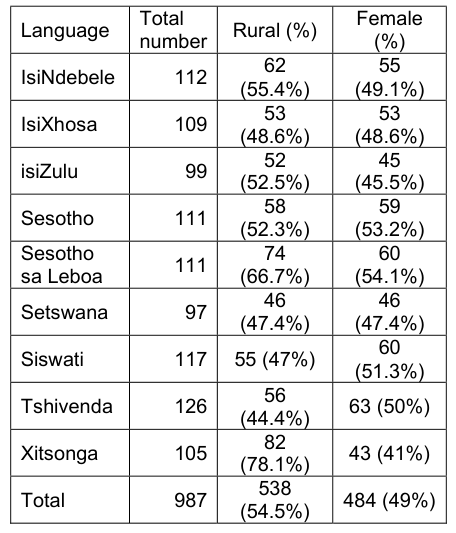
Table 4: Characteristics of the infant corpora, per language
3.2 Toddler CDI Corpora
As was the case for the infant CDI corpora, the nine toddler corpora each contain background information on the toddlers. Also included are the responses of the caregivers to the CDI items on words that the child produces (and therefore, by implication, comprehends as well) and the types of grammar constructions that the child can use. Searchable Excel files for each language contain data for 1050 toddlers (approximately 116 per language) in several tabs: As for the infant corpus, one tab contains user instructions; the others contain the background information for each child, as well as the vocabulary and grammar data. The characteristics of the completed CDIs included in the toddler corpora can be seen in Table 5.
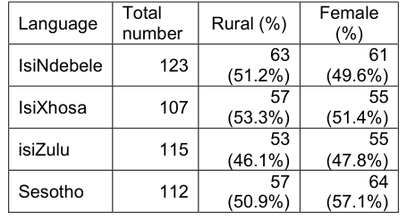
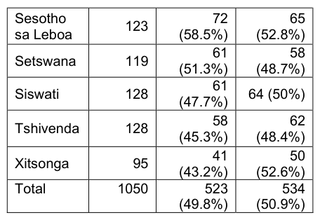
Table 5: Characteristics of the toddler corpora, per language
3.3 Toddler Language Samples
For isiNdebele, isiXhosa, isiZulu, Sesotho, Siswati, and Tshivenda, there are 20 transcribed language samples. These samples were collected from 10 male and 10 female toddlers of 28 to 30 months. The language samples are video recordings of natural interaction between the toddler and (a) familiar adult(s) and/or child(ren). For each toddler, there was collectively 30 to 60 minutes of recordings (see Table 6) which in total contained at least 50 different utterances per child. Some recordings were made by the fieldworker and others by the parents, other caregivers or other adults or children. The toddlers were filmed in and/or around their homes and/or daycares during everyday activities such as indoor/outdoor play or having a meal. Most children had more than one recording, because we wanted to capture conversations in various settings, with recordings ranging in length from 1 to 60 minutes. Recordings were transcribed in CHAT format (see CHILDES; MacWhinney, 2000) in order to render them ready for analysis in CLAN (MacWhinney, 2000). Table 6 indicates the characteristics of the participants who contributed to the language sample corpora and the length of the recordings, for each of the six languages for which this corpus construction has been completed.
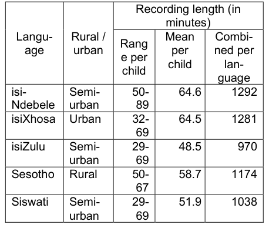
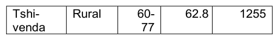
Table 6: Characteristics of the toddler language sample corpora, per language
4. Possible Research Uses
Although research has been conducted on child language for decades already, there are only a few well-researched languages in terms of child language development, and none of these are African languages (see Kidd and Garcia, 2022). The corpora enable one to answer a range of questions on the nature and size of the vocabulary of young speakers of African languages and on how this changes as the child ages; on the types of morphology that develops first and on how morphological development progresses between the ages of 16 and 30 months; on the mean length of the utterances of toddlers of various languages; on the relationship between child characteristics, household characteristics and child experiences on the one hand and language measures (communicative gestures, vocabulary, and grammar) on the other - for any one of the nine languages or crosslinguistically.
CDIs are used the world over as data collection instruments for research and diagnostic purposes. They allow one to measure and track language development in and of itself, but also as part of studies not pertaining to language development per se, such as studies on the effect of dialogic reading, medical treatment, or creche attendance on a child's development, of which language development forms an important part. Adding nine more language-versions of the CDI to the collection of existing CDIs significantly increases the scope of such research, allowing for the inclusion of child speakers of a wider range of languages. This enables contextually relevant research findings to be generated, which can inform contextually relevant early childhood intervention programmes.
Notes
* SA-CDI team: Monicca Bhuda (University of Mpumalanga), Nina Brink (North-West University), Heather Brookes (Stellenbosch University), Nomfundo Buthelezi (University of KwaZulu-Natal), Carmen Coetsee (Stellenbosch University), William Jiyana (University of Mpumalanga), Portia Khumalo (Stellenbosch University), Babalwa Ludidi (University of Cape Town), Patricia Makaure (Stellenbosch University), Martin Mössmer (University of Michigan), Muzi Matfunjwa (North-West University), Lufuno Miriri (University of Limpopo), Mikateko Ndhambi (Sefako Makgatho Health Science University), Sibusiso Ndlangamandla (University of South Africa), Helena Oosthuizen (Stellenbosch University), Nomsa Skosana (North-West University), and Katie Alcock (Lancaster University).
1 The corpora are stored by SADiLaR but have not yet been made available to other researchers. Enquiries about the final versions of the instruments can be directed to the second author.
2 We developed similar instruments and resources for the two official Germanic languages of South Africa, i.e., Afrikaans and South African English, but we report on those developed for the Bantu languages only and not on those developed for Afrikaans, which can also be viewed as an African language. Such resource development for South African Sign Language is yet to commence.
3 There is also a CDI-III for children of 30 to 37 months (see https://mb-cdi.stanford.edu/cdi_iii_form.html). It is a very short questionnaire, and few research teams have developed this CDI age version for their language(s).
4 Development of a language sample corpus for each of the remaining three language (Sesotho sa Leboa, Setswana and Xitsonga) is underway and will also consist of transcribed language samples and their audio recordings.
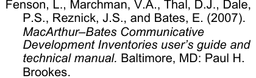
5. Bibliographical References
Alcock, K.J., Rimba, K., Holding, P., KitsaoWekulo, P., Abubakar, A., and Newton, C.R.J.C. (2015). Developmental inventories using illiterate parents as informants: Communicative Development Inventory (CDI) adaptation for two Kenyan languages. Journal of Child Language, 42:763-785.
Anđelković, D., Ševa, N., Savić, M., and Tutnjević, S. (2014). Izveštaj roditelja kao izvor podataka o ranom razvoju dečijeg govora (Parents' report as a source of information on child language development). XX naučni skup Empirijska istraživanja u psihologij. http://empirijskaistrazivanja.org/wp-content/uploads/2016/06/Knjiga-Rezimea-EIP-2014.pdf
Catts, H.W., Fey, M.E., Zhang, X., and Tomblin, J.B. (1999). Language basis of reading and reading disabilities: Evidence from a longitudinal investigation. Scientific Studies of Reading, 3:331-361.
Connelly, M. (1984). Basotho children's acquisition of noun morphology. Unpublished Ph.D. dissertation, University of Essex, UK.
Demuth, K. (1992). The acquisition of Sesotho. In D. Slobin (Ed.), The Crosslinguistic Study of Language Acquisition, 3. Hillsdale, NJ: Lawrence Erlbaum Associates, pp. 557-638.
Demuth, K. (1988). Noun classes and agreement in Sesotho acquisition. In M. Barlow, C.A. Ferguson (Eds.), Agreement in natural languages: Approaches, theories and descriptions. CSLI: University of Chicago Press, pp. 305-321.
Demuth, K. (2003). The acquisition of Bantu languages. In D. Nurse, G. Philippson (Eds.), The Bantu languages. Surrey, England: Curzon Press, pp. 209-222.
Fenson, L., Bates, E., Dale, P.S., Goodman, J.C., Reznick, J.S., and Thal, D. (1993). The MacArthur communicative development inventories: User's guide and technical manual. Baltimore, MD: Paul H. Brookes.
Fenson, L., Marchman, V.A., Thal, D.J., Dale, P.S., Reznick, J.S., and Bates, E. (2007). MacArthur–Bates Communicative Development Inventories user’s guide and technical manual. Baltimore, MD: Paul H. Brookes.
Frank, M.C., Braginsky, M., Yurovsky, D., and Marchman, V.A. (2017). WordBank: An open repository for developmental vocabulary data. Journal of Child Language, 44:677-694. https://doi.org/10.1017/S0305000916000209
Fricke, S., Bowyer-Crane, C., Haley, A.J., Hulme, C., and Snowling, M.J. (2013), Efficacy of language intervention in the early years. Journal of Child Psychology and Psychiatry, 54:280-290. https://doi.org/10.1111/jcpp.12010
Jarůšková, L., Smolík, F., Chládková, K., Oceláková, Z., and Paillereau, N. (2023). How to build a Communicative Development Inventory: Insights From 43 Adaptations. Journal of Speech, Language, and Hearing Research, 66:2095-2117. https://doi.org/10.1044/2023_JSLHR-22-00591
Jackson-Maldonado, D., Thal, D., Marchman, V., Bates, E., and Gutierrez-Clellen, V. (1993). Early lexical development in Spanishspeaking infants and toddlers. Journal of Child Language, 20:523-549. doi:10.1017/S0305000900008461
Kidd, E. and Garcia, R. (2022). How diverse is child language acquisition research? First Language, 42:703-735. https://doi.org/10.1177/01427237211066405
Kunene, E. (1979). The acquisition of Swati as a first language: A morphological study with special reference to noun prefixes, noun classes and some agreement markers. Unpublished Ph.D. dissertation, University of California at Los Angeles.
Suzman, S. (1991). The acquisition of Zulu. Unpublished Ph.D. dissertation, Witwatersrand University, Johannesburg, South Africa
Tsonope, J. (1987). The acquisition of Tswana noun class and agreement morphology, with special reference to demonstratives and possessives. Unpublished Ph.D. dissertation, State University of New York, Buffalo.
Tsonope, J. (1993). Children's acquisition of Bantu noun class prefixes. Botswana Notes & Records, 25(1):111-117.
6. Language Resource References
MacWhinney, B. (2000). The CHILDES Project: Tools for analyzing talk. Third Edition. Mahwah, NJ: Lawrence Erlbaum Associates. https://childes.talkbank.org/
7. Acknowledgments
This study was financially supported by the South African Center for Digital Language Resources. Additional funding came from The National Research Foundation of South Africa (HSD170602236563). Preliminary work for this research was supported by The British Academy Newton Fund (NG160093) and the National Research Foundation of South Africa/Swedish Foundation for International Cooperation in Research and Higher Education (NRF/STINT160918188417). Any opinion, findings, conclusions or recommendations expressed in this material are those of the authors.
Early Child Language Resources and Corpora Developed in Nine African Languages by the SADiLaR Child Language Development Node
Ressources linguistiques et corpus précoces de l'enfant développés dans neuf langues africaines par le nœud de développement du langage de l'enfant de SADiLaR
Affiliations
Michelle Jennifer White1,2, Frenette Southwood2, Sefela Yalala3 and the South
African Communicative Development Inventory team*
University of Plymouth1, Stellenbosch University2, Northwestern University3
, ,
Affiliations
Michelle Jennifer White1,2, Frenette Southwood2, Sefela Yalala3 and the South
African Communicative Development Inventory team*
University of Plymouth1, Stellenbosch University2, Northwestern University3
, ,
Abstract
Résumé
Prior to the initiation of the project reported on in this paper, there were no instruments available with which to measure the language skills of young speakers of nine official African languages of South Africa. This limited the kind of research that could be conducted, and the rate at which knowledge creation on child language development could progress. Not only does this result in a dearth of knowledge needed to inform child language interventions but it also hinders the development of child language theories that would have good predictive power across languages. This paper reports on (i) the development of a questionnaire that caregivers complete about their infant's communicative gestures and vocabulary or about their toddler's vocabulary and grammar skills, in isiNdebele, isiXhosa, isiZulu, Sesotho, Sesotho sa Leboa, Setswana, Siswati, Tshivenda, and Xitsonga; and (ii) the 24 child language corpora thus far developed with these instruments. The potential research avenues opened by the 18 instruments and 24 corpora are discussed.
Avant le lancement du projet décrit dans le présent article, il n’existait pas d’instruments permettant de mesurer les compétences linguistiques des jeunes locuteurs des neuf langues africaines officielles de l’Afrique du Sud. Cela limitait le genre de recherche qui pouvait être menée et le rythme auquel la création de connaissances sur le développement du langage des enfants pouvait progresser. Non seulement cela se traduit par une pénurie de connaissances nécessaires pour informer les interventions linguistiques des enfants, mais cela entrave également le développement de théories du langage enfant qui auraient un bon pouvoir prédictif à travers les langues. Ce document rend compte (i) de l'élaboration d'un questionnaire que les aidants remplissent au sujet des gestes communicatifs et du vocabulaire de leur nourrisson ou du vocabulaire et des compétences grammaticales de leur jeune enfant, en isiNdebele, isiXhosa, isiZulu, sesotho, sesotho sa leboa, setswana, siswati, tshivenda et xitsonga ; et (ii) des 24 corpus de langage enfantin constitués jusqu'à présent à l'aide de ces instruments. Les pistes de recherche potentielles ouvertes par les 18 instruments et les 24 corpus sont discutées.
Keywords
Mots-clés
Communicative development inventory, child language, gesture, vocabulary, grammar
Inventaire du développement communicatif, langage enfantin, geste, vocabulaire, grammaire
1. Introduction
1. Introduction
The dearth of instruments with which to measure early child language development in African languages and of child language corpora in these languages need attention for three main reasons. The first is that life chances are influenced by educational attainment, which requires good literacy, and that the latter is built on adequate language skills (Catts et al., 1999). It is pertinent to identify children who have poor language skills early so that they can receive the intervention necessary for the improvement of said skills (Fricke et al., 2013), and for such identification, one needs reliable measuring instruments and developmental norms. The second reason is related to the first: Child language intervention programmes need to be evidence-based and take typical child language development into account. To gain contextually relevant knowledge on typical child language development, we require instruments with which to measure and track development, and corpora to analyse so that we can answer our child language related research questions. The third reason is that most of what we know about child language development is based on research of English and other European world languages (such as German and French), and that this research (which could present a skewed picture of child language development) is what informs theories of child language development (Kidd and Garcia, 2022). To generate knowledge on child language development in African languages with which to test the generalisability of existing child language theories, we need appropriate child language measuring instruments and sizeable child language corpora in African languages.
Le manque d'instruments permettant de mesurer le développement du langage chez les jeunes enfants dans les langues africaines et de corpus de langage enfantin dans ces langues nécessite une attention pour trois raisons principales. La première est que les chances de vie sont influencées par le niveau d'instruction, qui exige une bonne alphabétisation, et que cette dernière repose sur des compétences linguistiques adéquates (Catts et al., 1999). Il est pertinent d’identifier les enfants qui ont de mauvaises compétences linguistiques tôt afin qu’ils puissent recevoir l’intervention nécessaire pour l’amélioration de ces compétences (Fricke et al., 2013), et pour une telle identification, il faut des instruments de mesure fiables et des normes de développement. La deuxième raison est liée à la première : les programmes d'intervention sur le langage des enfants doivent être fondés sur des preuves et prendre en compte le développement typique du langage des enfants. Pour acquérir des connaissances contextuellement pertinentes sur le développement typique du langage de l'enfant, nous avons besoin d'instruments pour mesurer et suivre le développement, et de corpus à analyser afin que nous puissions répondre à nos questions de recherche liées au langage de l'enfant. La troisième raison est que la plupart de ce que nous savons sur le développement du langage chez l'enfant repose sur des recherches menées sur l'anglais et d'autres langues mondiales européennes (comme l'allemand et le français), et que ces recherches (qui pourraient présenter une image biaisée du développement du langage chez l'enfant) sont ce qui informe les théories du développement du langage chez l'enfant (Kidd et Garcia, 2022). Pour générer des connaissances sur le développement du langage chez l'enfant dans les langues africaines avec lesquelles tester la généralisabilité des théories existantes du langage enfantin, nous avons besoin d'instruments de mesure du langage enfantin appropriés et de corpus de langage enfantin de taille importante dans les langues africaines.
In this paper, we report on instruments and corpora developed for isiNdebele, isiXhosa, isiZulu, Sesotho, Sesotho sa Leboa, Setswana, Siswati, Tshivenda, and Xitsonga by a multilingual, multi-site team of linguists, speech-language therapists, and African language specialists. Specifically, one infant and one toddler version of a child language assessment instrument - the MacArthur-Bates Communicative Development Inventory (CDI, Fenson et al., 2007) - was developed for each of these nine official spoken African languages of South Africa, and (ii) 24 corpora were built, or are in the process of being built, with these instruments. These corpora comprise the infant and the toddler CDI data as well as transcribed language samples collected from toddlers who speak one of these nine languages. We also discuss the research possibilities these instruments and corpora afford us.
Dans cet article, nous présentons les instruments et les corpus développés pour l'isiNdebele, l'isiXhosa, l'isiZulu, le Sesotho, le Sesotho sa Leboa, le Setswana, le Siswati, le Tshivenda et le Xitsonga par une équipe multilingue et multisite de linguistes, d'orthophonistes et de spécialistes des langues africaines. Plus précisément, une version pour nourrisson et une version pour tout-petit d'un instrument d'évaluation du langage de l'enfant — le MacArthur-Bates Communicative Development Inventory (CDI, Fenson et al., 2007) — a été développée pour chacune de ces neuf langues africaines officielles parlées en Afrique du Sud, et (ii) 24 corpus ont été construits, ou sont en cours de construction, avec ces instruments. Ces corpus comprennent les données CDI de nourrissons et de tout-petits ainsi que des échantillons de langage transcrits collectés auprès de tout-petits qui parlent l'une de ces neuf langues. Nous discutons également des possibilités de recherche que ces instruments et corpus nous offrent.
2. The South African Communicative Development Inventories
2. Les inventaires sud-africains du développement communicatif
The MacArthur-Bates CDI was first developed for American English (Fenson et al., 1993) but has since been adapted for more than 100 languages from different language families (see https://mb-cdi.stanford.edu/adaptations.html), under license of, and following the guidelines of, the MacArthur-Bates Board in order to render culturally and linguistically appropriate adaptations rather than mere translations. There are two age versions of the CDI, one for infants (8 to 18 months) and another for toddlers (16 to 30 months), with the 16- to 18-month overlap being intentional. CDIs are caregiver reports: The parents or other primary caregivers check off on a list which language items a child has acquired. Both the infant and toddler CDIs focus on vocabulary. Words from more than 20 semantic domains are listed alphabetically (see Table 2 further below for the domains included in the South African CDIs). Caregivers are asked to indicate which of these words the child knows. On the infant version, a list of approximately 400 words (see Table 2 for precise numbers) can be marked off for either comprehension, or comprehension and production. On the toddler version, a list of approximately 700 words can be marked off, for production only. The infant CDI also contains checklists for gestures, play routines, actions, and comprehension of commonly used phrases (see Section 2.2.1), whereas the toddler CDI has grammar checklists for morphology, word combinations, and sentence complexity (see Section 2.2.3).
Le MacArthur-Bates CDI a d'abord été développé pour l'anglais américain (Fenson et al., 1993), mais a depuis été adapté à plus de 100 langues issues de différentes familles linguistiques (voir https://mb-cdi.stanford.edu/adaptations.html), sous licence et en suivant les directives du MacArthur-Bates Board afin de réaliser des adaptations culturellement et linguistiquement appropriées plutôt que de simples traductions. Il existe deux versions d'âge du CDI, une pour les nourrissons (8 à 18 mois) et une autre pour les tout-petits (16 à 30 mois), le chevauchement de 16 à 18 mois étant intentionnel. Les CDI sont des questionnaires remplis par les aidants : les parents ou autres aidants principaux cochent sur une liste les éléments linguistiques qu'un enfant a acquis. Les CDI du nourrisson et du tout-petit se concentrent sur le vocabulaire. Des mots issus de plus de 20 domaines sémantiques sont listés par ordre alphabétique (voir Tableau 2 ci-dessous pour les domaines inclus dans les CDI sud-africains). Les aidants sont invités à indiquer lesquels de ces mots l'enfant connaît. Sur la version infantile, une liste d'environ 400 mots (voir le tableau 2 pour des chiffres précis) peut être cochée soit pour la compréhension, soit pour la compréhension et la production. Sur la version pour tout-petits, une liste d'environ 700 mots peut être cochée, pour la production uniquement. Le CDI pour bébé contient également des listes de contrôle pour les gestes, les routines de jeu, les actions et la compréhension des phrases couramment utilisées (voir la section 2.2.1), tandis que le CDI pour tout-petit a des listes de contrôle de grammaire pour la morphologie, les combinaisons de mots et la complexité des phrases (voir la section 2.2.3).
2.1 Method for Developing the Communicative Development Inventories
2.1 Méthode d'élaboration des inventaires de développement communicatif
2.1.1 General Protocol
2.1.1 Protocole général
Following the MacArthur-Bates Board's guidelines, research teams have utilised a range of methods to adapt CDIs to new languages (see Jarůšková et al., 2023). Many teams make use of Wordbank (Frank et al., 2017), an open access repository of CDI data, to examine which words other CDIs have included. Due to Wordbank only having come into being after the commencement of the current study, this approach was not applied. Another common way to begin the adaptation process is to translate an existing CDI into the target language (Jarůšková et al., 2023), which is subsequently expanded by adding words that are culture-specific and/or language-specific. We began by translating the American English CDI to the target languages. Following, for example, Anđelković et al. (2017) for Serbian and Jackson-Maldonado et al. (1993) for Mexican Spanish, we made use of caregiver interviews to uncover which actions, gestures, and words in the translation might be irrelevant or missing. We also employed focus group discussions and spontaneous language samples to the same effect, as discussed below.
Conformément aux directives du MacArthur-Bates Board, les équipes de recherche ont utilisé diverses méthodes pour adapter les CDI à de nouvelles langues (voir Jarůšková et al., 2023). De nombreuses équipes utilisent Wordbank (Frank et al., 2017), un référentiel de données CDI en libre accès, pour examiner les mots inclus dans les autres CDI. Étant donné que Wordbank n'a vu le jour qu'après le début de la présente étude, cette approche n'a pas été appliquée. Une autre façon courante de commencer le processus d'adaptation consiste à traduire un CDI existant dans la langue cible (Jarůšková et al., 2023), qui est ensuite élargi en ajoutant des mots qui sont spécifiques à la culture et/ou spécifiques à la langue. Nous avons commencé par traduire le CDI en anglais américain vers les langues cibles. En suivant, par exemple, Anđelković et al. (2017) pour le serbe et Jackson-Maldonado et al. (1993) pour l'espagnol mexicain, nous avons utilisé des entretiens avec les aidants pour découvrir quelles actions, quels gestes et quels mots dans la traduction pourraient être non pertinents ou manquants. Nous avons également employé des discussions de groupe focalisé et des échantillons de langage spontané au même effet, comme discuté ci-dessous.
Due to the nature of the differences between the grammars of English and African languages, the grammar sections could not use a translation of the American English CDI as their point of departure. As we will explain below, we consulted the Kiswahili and Kigiryama CDIs (Alcock et al., 2015), the limited literature available on early language development in Bantu languages, caregivers of young children speaking the relevant languages, focus groups, and our recordings of toddlers' spontaneous language samples to create a first version of the grammar section.
En raison de la nature des différences entre les grammaires de l'anglais et des langues africaines, les sections de grammaire n'ont pas pu utiliser une traduction du CDI en anglais américain comme point de départ. Comme nous l'expliquerons ci-dessous, nous avons consulté les CDI kiswahili et kigiryama (Alcock et al., 2015), la littérature limitée disponible sur le développement précoce du langage dans les langues bantoues, les aidants de jeunes enfants parlant les langues concernées, des groupes de discussion, et nos enregistrements d'échantillons de langage spontané de tout-petits pour créer une première version de la section de grammaire.
The main aims of this pre-pilot phase were to check for completeness and eliminate cultural bias before piloting the CDIs. Below, we discuss the steps that were followed during the adaptation process in more detail.
Les principaux objectifs de cette phase pré-pilote étaient de vérifier l'exhaustivité et d'éliminer les biais culturels avant de piloter les CDIs. Ci-dessous, nous discutons plus en détail des étapes qui ont été suivies lors du processus d'adaptation.
2.1.2 Testing the First and Second Draft Versions of the CDI
2.1.2 Test des première et deuxième versions préliminaires du CDI
As a first step, the American English CDI was translated by three mother tongue speakers per language for isiXhosa, Sesotho, Setswana and Xitsonga. Initially, funding could only be secured for four languages, and these four were selected because we had an existing network of mother-tongue-speaking researchers available for them. The adaptation process for the remaining five languages (isiZulu, isiNdebele, Sesotho sa Leboa, Siswati and Tshivenda) was initiated two years later, after the CDIs for the first four languages had been piloted twice, and once further funding had been secured. A main consideration was to harmonise all nine CDI language versions so that they would be comparable and allow for crosslinguistic comparisons and data pooling during future research. Considering that the first four languages' adaptations performed very well during the two pilots, the adaptation of the CDI for the last five languages did not start with a translation of the American English CDI but rather with that of a more closely related language's CDI: For the Nguni languages (isiZulu, isiNdebele and Siswati), the isiXhosa adaptation of the CDI was translated; Sesotho sa Leboa used the Sesotho and Setswana CDIs; and Tshivenda used the Xitsonga CDI. Harmonisation across languages commenced before the first pilot of the first four languages and was further refined after both the first and second pilots.
Dans un premier temps, le CDI en anglais américain a été traduit par trois locuteurs natifs pour chaque langue pour l'isiXhosa, le Sesotho, le Setswana et le Xitsonga. Au départ, le financement ne pouvait être assuré que pour quatre langues, et ces quatre langues ont été choisies parce que nous disposions d'un réseau existant de chercheurs de langue maternelle. Le processus d'adaptation pour les cinq langues restantes (isiZulu, isiNdebele, Sesotho sa Leboa, Siswati et Tshivenda) a été lancé deux ans plus tard, après que les CDI pour les quatre premières langues eurent été expérimentés à deux reprises et que des fonds supplémentaires eurent été obtenus. Une considération principale était d'harmoniser toutes les neuf versions linguistiques du CDI afin qu'elles soient comparables et permettent des comparaisons croisées et le regroupement de données lors de recherches futures. Compte tenu du fait que les adaptations des quatre premières langues ont très bien performé lors des deux tests pilotes, l'adaptation du CDI pour les cinq dernières langues n'a pas commencé par une traduction du CDI en anglais américain mais plutôt par celle d'un CDI d'une langue plus proche : pour les langues Nguni (isiZulu, isiNdebele et Siswati), l'adaptation du CDI en isiXhosa a été traduite ; le Sesotho sa Leboa a utilisé les CDIs en Sesotho et Setswana ; et le Tshivenda a utilisé le CDI en Xitsonga. L'harmonisation entre les langues a commencé avant le premier projet pilote des quatre premières langues et a été affinée après les premier et deuxième projets pilotes.
As indicated above, two rounds of piloting were completed for the first four languages, but only one for the remaining five languages because they were closely based on the four already piloted language versions of the CDI. In the first pilot, each of the preliminary adaptations of the CDIs were completed by 40 caregivers of infants 8 to 18 months old and another 40 caregivers of toddlers 16 to 32 months old. They completed paper copies of the CDIs with the help of fieldworkers who were recruited via Early Childhood Development centers and researcher networks. After the first pilot, some items were removed or replaced based on the caregiver responses.
Comme indiqué ci-dessus, deux tours de tests pilotes ont été réalisés pour les quatre premières langues, mais seulement un pour les cinq langues restantes car elles étaient étroitement basées sur les versions linguistiques déjà testées du CDI. Lors du premier test pilote, chacune des adaptations préliminaires des CDIs a été remplie par 40 aidants d'enfants de 8 à 18 mois et 40 autres aidants d'enfants de 16 à 32 mois. Ils ont rempli des copies papier des CDI avec l'aide d'enquêteurs de terrain recrutés par l'intermédiaire de centres de développement de la petite enfance et de réseaux de chercheurs. Après le premier test pilote, certains éléments ont été retirés ou remplacés en fonction des réponses des aidants.
For the second pilot of the first four languages and the only pilot of the last five languages, online CDIs were used instead of paper-based versions. The online CDIs were built on Qualtrics (Provo, Utah), eliminating possible human error in data capturing. Additionally, the Qualtrics application allowed for the collection of data without the need for internet connectivity, which is a necessity in rural areas and during the frequent electricity blackouts South Africa has been experiencing.
Pour le deuxième projet pilote des quatre premières langues et le seul projet pilote des cinq dernières langues, des CDI en ligne ont été utilisés au lieu de versions papier. Les CDI en ligne ont été construits sur Qualtrics (Provo, Utah), éliminant les erreurs humaines possibles dans la saisie des données. De plus, l'application Qualtrics a permis la collecte de données sans nécessiter de connectivité internet, ce qui est une nécessité dans les zones rurales et pendant les fréquentes coupures de courant que l'Afrique du Sud a connues.
Data from caregivers of more than 100 infants and 100 toddlers per language was collected (see Tables 4 and 5 for exact numbers per language) during Pilot 2 of the first four languages and the only pilot of the remaining five, again with the assistance of fieldworkers, either face-to-face or (when COVID-19 social distancing regulations were in place) telephonically. This was done for respondent comfort, given that many caregivers were not able to complete the CDI themselves due to low literacy levels or technology-related limitations.
Des données provenant des aidants de plus de 100 nourrissons et 100 tout-petits par langue ont été collectées (voir les tableaux 4 et 5 pour les nombres exacts par langue) lors du pilote 2 des quatre premières langues et du seul pilote des cinq langues restantes, à nouveau avec l'aide d'enquêteurs de terrain, soit en face-à-face, soit (lorsque les réglementations de distanciation sociale liées au COVID-19 étaient en place) par téléphone. Cela a été fait pour le confort des répondants, étant donné que de nombreux aidants n'étaient pas en mesure de remplir le CDI eux-mêmes en raison de niveaux de littératie faibles ou de limitations liées à la technologie.
2.1.3 Development of the Actions and Gestures Section (Infant CDI)
2.1.3 Développement de la section Actions et Gestes (Infant CDI)
Actions and gestures that are on the American English CDI were used as a starting point for this section. Those items which were not relevant to our context were excluded or modified after translation, and actions and gestures typically used by speakers of the target languages were added. To make the items relevant to the South African context, some had to be adapted. For example, rather than asking whether the child waved to say hello, as in the American English CDI, we asked whether the child used a gesture to greet such as waving, thumbs up, high five or something culturally similar. This was done to cover the variation that exists in children's first social gestures for greeting across the languages concerned. Imitating adult actions were also changed to be more culturally and/or contextually appropriate. For instance, brooms are used more often for cleaning than vacuum cleaners, therefore sweeping was added to the American English CDI's question about whether the child imitates adults by attempting to mop or vacuum clean.
Les actions et les gestes qui figurent sur le CDI d'anglais américain ont été utilisés comme point de départ pour cette section. Les éléments qui n'étaient pas pertinents pour notre contexte ont été exclus ou modifiés après la traduction, et les actions et gestes généralement utilisés par les locuteurs des langues cibles ont été ajoutés. Pour rendre les éléments pertinents pour le contexte sud-africain, certains ont dû être adaptés. Par exemple, plutôt que de demander si l'enfant a fait signe de dire bonjour, comme dans le CDI anglais américain, nous avons demandé si l'enfant a utilisé un geste pour saluer comme agiter, pouce levé, high five ou quelque chose de culturellement similaire. Cela a été fait pour couvrir la variation qui existe dans les premiers gestes sociaux des enfants pour saluer à travers les langues concernées. Les actions imitant les adultes ont également été modifiées pour être plus adaptées culturellement et / ou contextuellement. Par exemple, les balais sont utilisés plus souvent pour le nettoyage que les aspirateurs, donc le balayage a été ajouté à la question du CDI en anglais américain sur le fait de savoir si l'enfant imite les adultes en essayant de laver ou d'aspirer.
2.1.4 Development of the Words Section
2.1.4 Développement de la section des mots
The translated CDIs were presented to individual language practitioners of each language (e.g., linguists or speech-language therapists) whereafter two focus groups per language were consulted. They consisted of professionals who work with children as well as parents of young children. The feedback from the language practitioners and focus groups led to the removal and addition of some words and/or synonyms. Words which are not relevant to everyday South African life, such as snow suit, were removed, whereas words had to be added when, for instance, a single word on the American English CDI could be translated in multiple ways. Consider, for example, porridge, which is a staple food for many South Africans. Various types of porridge (e.g., maize meal porridge or oatmeal porridge) can be referred to with one word, porridge, in English but require several words in the African languages concerned, depending on its ingredients and consistency, including papa, mahleu, motoho, or mabele in Sesotho, and motogo, bogobe or phaletšhe in Setswana. All these words for porridge were added to the word lists. When adapting the word lists, dialects or varieties of the specific languages were also considered. For this reason, the focus groups comprised of people speaking various dialects or varieties of the language in question and focus group members were requested to point out those items which were highly dialectal or variety specific.
Les CDI traduits ont été présentés à des praticiens linguistiques individuels de chaque langue (par exemple, des linguistes ou des orthophonistes), après quoi deux groupes de discussion par langue ont été consultés. Ils se composaient de professionnels qui travaillent avec les enfants ainsi que les parents de jeunes enfants. Les retours des praticiens linguistiques et des groupes de discussion ont conduit à la suppression et à l'ajout de certains mots et/ou synonymes. Les mots qui ne sont pas pertinents pour la vie quotidienne en Afrique du Sud, comme snow suit, ont été retirés, tandis que des mots ont dû être ajoutés lorsque, par exemple, un seul mot sur le CDI en anglais américain pouvait être traduit de plusieurs façons. Prenons, par exemple, le porridge, qui est un aliment de base pour de nombreux Sud-Africains. Différents types de bouillie (par exemple, la bouillie de farine de maïs ou la bouillie d'avoine) peuvent être désignés par un seul mot, porridge, en anglais, mais nécessitent plusieurs mots dans les langues africaines concernées, en fonction de ses ingrédients et de sa consistance, y compris papa, mahleu, motoho, ou mabele en Sesotho, et motogo, bogobe ou phaletšhe en Setswana. Tous ces mots pour porridge ont été ajoutés aux listes de mots. Lors de l'adaptation des listes de mots, les dialectes ou variétés des langues spécifiques ont également été pris en compte. Pour cette raison, les groupes de discussion étaient composés de personnes parlant divers dialectes ou variétés de la langue en question et les membres des groupes de discussion ont été invités à signaler les éléments qui étaient très dialectaux ou spécifiques à une variété.
Subsequently, 30-minute samples of naturally occurring spontaneous language were collected from six toddlers (27 to 32 months) per language. Words that were found to occur in the language samples but were not yet on the word lists were added.
Par la suite, des échantillons de 30 minutes de langage spontané naturel ont été recueillis auprès de six tout-petits (27 à 32 mois) par langue. Les mots qui se sont avérés présents dans les échantillons de langage mais qui ne figuraient pas encore sur les listes de mots ont été ajoutés.
Although the same protocol was followed for all languages in an attempt to facilitate crosslinguistic comparisons, the final number of words varied across languages (see Table 2). This is due, for instance, to some words being polysemous in one language while several related words were required in another.
Bien que le même protocole ait été suivi pour toutes les langues dans une tentative de faciliter les comparaisons croisées, le nombre final de mots a varié selon les langues (voir Tableau 2). Cela est dû, par exemple, au fait que certains mots sont polysémiques dans une langue alors que plusieurs mots connexes sont nécessaires dans une autre.
2.1.5 Development of the Grammar Section (Toddler CDI)
2.1.5 Développement de la section Grammaire (Toddler CDI)
Only a limited number of studies have been conducted on grammar development in children learning Bantu languages, yielding very little available empirical evidence. Such evidence on early acquired grammatical constructs was available for only a few languages (see Demuth, 2003 for a summary), namely Sesotho (e.g., Connelly, 1984; Demuth, 1992), Siswati (Kunene, 1979), isiZulu (Suzman, 1991) and Setswana (Tsonope, 1987; 1993). Thus, the grammar section had to be developed based on this limited existing literature, the language samples referred to above, and the Kiswahili and Kigiriama CDIs (Alcock et al., 2015). These were the only published full CDIs that had been adapted into African languages at the time. The grammar section of the Kiswahili/Kigiriama CDIs appeared to perform well (Alcock et al., 2015) and were thus deemed reliable for use as a starting point. Their structure was followed, yielding grammar sections which each consisted of four subsections, namely small parts of words, word complexity, word combinations, and sentence complexity (see Table 3 for more information). The language professionals and focus groups commented on the preliminary items and were encouraged to suggest examples of constructions that children acquiring the languages are likely to hear or to produce.
Seul un nombre limité d'études ont été menées sur le développement de la grammaire chez les enfants apprenant les langues bantoues, ce qui donne très peu de preuves empiriques disponibles. De telles preuves sur les constructions grammaticales acquises tôt n'étaient disponibles que pour quelques langues (voir Demuth, 2003 pour un résumé), à savoir le sesotho (par exemple, Connelly, 1984; Demuth, 1992), le Siswati (Kunene, 1979), l'isiZulu (Suzman, 1991) et le Setswana (Tsonope, 1987; 1993). Ainsi, la section de grammaire a dû être développée à partir de cette littérature limitée existante, des échantillons de langue mentionnés ci-dessus et des CDI de Kiswahili et de Kigiriama (Alcock et al., 2015). Il s'agissait des seuls CDIs complets publiés qui avaient été adaptés en langues africaines à l'époque. La section de grammaire des CDI Kiswahili/Kigiriama semblait bien fonctionner (Alcock et al., 2015) et a donc été jugée fiable pour être utilisée comme point de départ. Leur structure a été suivie, donnant lieu à des sections de grammaire qui comprenaient chacune quatre sous-sections, à savoir les petites parties de mots, la complexité des mots, les combinaisons de mots et la complexité des phrases (voir le tableau 3 pour plus d'informations). Les professionnels de la langue et les groupes de discussion ont commenté les éléments préliminaires et ont été encouragés à suggérer des exemples de constructions que les enfants acquérant les langues sont susceptibles d'entendre ou de produire.
Across the languages, there were many similarities but also some distinct grammatical differences. The decision was made to include additional, language-specific items (more than would be needed in the final version of the CDI) for the first pilot, even if the type of construction did not occur in all the languages concerned. This was done to ascertain which items would be most effective because so little data is available on these languages. In Sesotho and Setswana, for instance, there is irregular verb inflection in the past tense, therefore items pertaining to this were included for these two languages only.
À travers les langues, il y avait beaucoup de similitudes mais aussi quelques différences grammaticales distinctes. Il a été décidé d'inclure des éléments supplémentaires spécifiques à la langue (plus que ce qui serait nécessaire dans la version finale du CDI) pour le premier projet pilote, même si le type de construction ne se produisait pas dans toutes les langues concernées. Cela a été fait pour déterminer quels éléments seraient les plus efficaces, car il y a si peu de données disponibles sur ces langues. En sesotho et en setswana, par exemple, il existe une flexion verbale irrégulière au passé, de sorte que les éléments s'y rapportant n'ont été inclus que pour ces deux langues.
A feature common to Bantu languages is that of having several noun classes (which take the form of prefixes), with different numbers in each language. Moreover, some languages and language varieties have pre-prefixes that do not exist in others. Examples of these items that contain structures that would likely be part of a child's early grammar had to be found. The main source of these examples were the language professionals and focus groups.
Une caractéristique commune aux langues bantoues est celle d'avoir plusieurs classes nominales (qui prennent la forme de préfixes), avec des nombres différents dans chaque langue. De plus, certaines langues et variétés linguistiques ont des pré-préfixes qui n'existent pas dans d'autres. Des exemples de ces éléments qui contiennent des structures qui feraient probablement partie de la grammaire précoce d'un enfant ont dû être trouvés. La principale source de ces exemples a été les professionnels de la langue et les groupes de discussion.
After the first pilot of the first four languages, the grammar items were improved based on the caregiver responses, and the instructions were clarified to make it easier for caregivers to understand the questions about grammar. Feedback from fieldworkers was especially important to determine what might have been confusing for the caregivers.
Après le premier pilote des quatre premières langues, les éléments de grammaire ont été améliorés en fonction des réponses des aidants, et les instructions ont été clarifiées pour faciliter la compréhension des questions sur la grammaire par les aidants. Les retours des travailleurs de terrain ont été particulièrement importants pour déterminer ce qui aurait pu être confus pour les aidants.
The second pilot was conducted with caregivers of 100 toddlers and indicated that the items were suitable; the items correlated significantly with each other and with the child's age and the child's vocabulary size, the latter measured by the word section of the CDI.
Le deuxième pilote a été mené avec les aidants de 100 tout-petits et a indiqué que les éléments étaient appropriés ; les éléments étaient significativement corrélés entre eux et avec l'âge de l'enfant et la taille du vocabulaire de l'enfant, cette dernière mesurée par la section des mots du CDI.
The grammar sections of the second group of languages (isiNdebele, isiZulu, Sesotho sa Leboa, Siswati, and Tshivenda), were based on the first four languages', with some adaptation. Their examples came from focus group discussions with caregivers and language professionals and from natural child language recordings. Some items were substituted because they relate to aspects that are irregular in one language but not in another, for instance; or the relevant structure differed across languages. For example, Tshivenda uses a prefix to mark past tense whereas the other languages use a suffix. These grammar sections were piloted once, with 100 caregivers per language.
Les sections de grammaire du deuxième groupe de langues (isiNdebele, isiZulu, Sesotho sa Leboa, Siswati, et Tshivenda) étaient basées sur celles des quatre premières langues, avec quelques adaptations. Leurs exemples provenaient de discussions de groupe focal avec des aidants et des professionnels de la langue, ainsi que d'enregistrements naturels du langage enfantin. Certains éléments ont été remplacés car ils concernent des aspects qui sont irréguliers dans une langue mais pas dans une autre, par exemple ; ou la structure pertinente différait d'une langue à l'autre. Par exemple, le tshivenda utilise un préfixe pour marquer le temps passé, tandis que les autres langues utilisent un suffixe. Ces sections de grammaire ont été mises à l’essai une fois, avec 100 aidants par langue.
2.2 Content of the Final Versions of the Communicative Development Inventories
2.2 Contenu des versions finales des Inventaires du développement communicatif
Details of the final versions of the CDIs are summarised in the tables below. Table 1 indicates the five subsections of the actions and gesture section, and the number of items in each subsection. These subsections are (i) first communicative gestures, e.g., deictic gestures such as pointing; (ii) games and routines, e.g., clapping hands, (iii) actions with objects, e.g., drinking from a cup; (iv) pretending to be a parent, which included symbolic gestures and play schemes with a 'baby', e.g., dressing or trying to dress a doll or soft toy; and (v) imitating other adult actions, e.g., writing with a pen/pencil.
Les détails des versions finales des CDIs sont résumés dans les tableaux ci-dessous. Le tableau 1 indique les cinq sous-sections de la section des actions et des gestes, ainsi que le nombre d'éléments dans chaque sous-section. Ces sous-sections sont (i) les premiers gestes communicatifs, par exemple les gestes déictiques comme pointer du doigt ; (ii) les jeux et routines, par exemple taper dans les mains ; (iii) les actions avec des objets, par exemple boire dans une tasse ; (iv) faire semblant d'être un parent, ce qui inclut les gestes symboliques et les schémas de jeu avec un « bébé », par exemple habiller ou essayer d'habiller une poupée ou une peluche ; et (v) imiter d'autres actions d'adulte, par exemple écrire avec un stylo ou un crayon.
Table 1: Number and types of items in the action and gestures sections
Tableau 1 : Nombre et types d'éléments dans les sections action et gestes
Table 2 provides the mean number of words per semantic domain on the Infant forms and the Toddler forms of the CDI. These differ somewhat across languages, as explained in Section 2.1.5.
Le Tableau 2 indique le nombre moyen de mots par domaine sémantique dans les formulaires Nourrisson et les formulaires Jeune enfant du CDI. Ceux-ci diffèrent quelque peu d'une langue à l'autre, comme expliqué dans la Section 2.1.5.
Table 2: Number of items per semantic domain of the words section, average across languages
Tableau 2 : Nombre d'éléments par domaine sémantique de la section des mots, en moyenne par langue
The grammar section of the CDIs is divided into four subsections. The first concerns noun and verb affixes, representing both singular and plural noun classes and past and present tense markers. These are presented in the form of yes/no questions. For example, caregivers are asked the equivalent of "Has your child started adding endings to words to show that an event has already happened?", with two or three language-appropriate examples provided.
La section de grammaire des CDIs est divisée en quatre sous-sections. La première concerne les affixes des noms et des verbes, représentant à la fois les classes nominales du singulier et du pluriel et les marqueurs de temps passé et présent. Celles-ci sont présentées sous forme de questions oui/non. Par exemple, on demande aux aidants l'équivalent de « Votre enfant a-t-il commencé à ajouter des terminaisons aux mots pour montrer qu'un événement s'est déjà produit ? », avec deux ou trois exemples appropriés à la langue fournis.
The second subsection asks in more detail about the use of noun class prefixes and verb affixes. The first 10 noun classes are covered as singular and plural pairs, e.g., Class 3 (singular) and Class 4 (the plural of Class 3), but there are only 8 items because, for some of the languages, (i) Classes 8 and 10 have the same prefixes (with nouns in Class 10 occurring more frequently), and (ii) Class 9 has a null prefix and/or occurred less frequently in our language samples and was thus not included. The items are presented as a trio of words with increasing complexity, i.e., a noun stem with no prefix (for instance, in isiXhosa fazi '(married) woman'), a noun stem with a 'shadow vowel' or place holder prefix (mfazi), and a noun stem with a full, correct prefix (umfazi); see Tsonope (1993) and Demuth (1988) for a discussion of these three stages of noun class prefix acquisition. Noun stems that exemplify each item were selected based on word frequency in the language samples. This subsection also asks about the use of verb affixes. These are presented as a pair or trio of words, again in increasing complexity, i.e., a verb stem with no affix, a verb stem with the full affix, and in some cases a middle option of a partial or incorrect affix.
La deuxième sous-section aborde plus en détail l'utilisation des préfixes de classe nominale et des affixes verbaux. Les 10 premières classes nominales sont couvertes sous forme de paires singulier/pluriel, par exemple la classe 3 (singulier) et la classe 4 (le pluriel de la classe 3), mais il n'y a que 8 items car, pour certaines des langues, (i) les classes 8 et 10 ont les mêmes préfixes (les noms de la classe 10 apparaissant plus fréquemment), et (ii) la classe 9 a un préfixe nul et/ou apparaissait moins fréquemment dans nos échantillons de langue et n'a donc pas été incluse. Les items sont présentés sous forme de trio de mots de complexité croissante, c'est-à-dire un radical nominal sans préfixe (par exemple, en isiXhosa fazi « femme (mariée) »), un radical nominal avec une « voyelle fantôme » ou un préfixe de substitution (mfazi), et un radical nominal avec un préfixe complet et correct (umfazi) ; voir Tsonope (1993) et Demuth (1988) pour une discussion de ces trois étapes de l'acquisition du préfixe de classe nominale. Les radicaux nominaux qui illustrent chaque item ont été sélectionnés en fonction de la fréquence des mots dans les échantillons de langue. Cette sous-section pose également des questions sur l'utilisation des affixes verbaux. Ceux-ci sont présentés sous forme de paire ou de trio de mots, là encore en complexité croissante, c'est-à-dire un radical verbal sans affixe, un radical verbal avec l'affixe complet, et dans certains cas une option intermédiaire d'un affixe partiel ou incorrect.
The third subsection asks the caregiver the equivalent of "Has the child started to combine words to form short sentences?", with two language-appropriate examples provided. If the caregiver responds affirmatively, they are asked to provide three examples of the longest sentences they heard the child say that week.
La troisième sous-section demande à l'aidant l'équivalent de « L'enfant a-t-il commencé à combiner des mots pour former des phrases courtes? », avec deux exemples adaptés à la langue. Si l'aidant répond par l'affirmative, on lui demande de fournir trois exemples des phrases les plus longues qu'il ou elle a entendu l'enfant dire cette semaine-là.
The last grammar subsection asks about the length and complexity of sentences. These are given as an example with two to four options of increasing complexity. The caregiver is asked to select the form that most closely resembles what their child would say - for example, "I want bread" or "I want bread and a drink".
La dernière sous-section de grammaire pose des questions sur la longueur et la complexité des phrases. Celles-ci sont données à titre d'exemple avec deux à quatre options de complexité croissante. On demande à la personne qui s'occupe de l'enfant de choisir la forme qui ressemble le plus à ce que son enfant dirait - par exemple, « Je veux du pain » ou « Je veux du pain et une boisson ».
The number of items per subsection is presented in Table 3, along with an indication of the types of constructions that the questions ask about.
Le nombre d'éléments par sous-section est présenté au tableau 3, ainsi qu'une indication des types de constructions sur lesquels portent les questions.
Table 3: Number and types of items per category of the final grammar sections
Tableau 3 : Nombre et types d’éléments par catégorie des sections finales de grammaire
3. Child Language Corpora
3. Corpus de langues enfantines
We developed three types of corpora, namely one corpus for each of the nine languages containing the caregiver responses to the infant CDIs and another containing those to the toddler CDI, as well as a corpus consisting of orthographically transcribed language samples (and their audio recordings) for six of the nine languages. Each of these types of corpora is briefly discussed below.
Nous avons développé trois types de corpus, à savoir un corpus pour chacune des neuf langues contenant les réponses du soignant aux CDI du nourrisson et un autre contenant ceux du CDI du tout-petit, ainsi qu’un corpus composé d’échantillons de langue transcrits orthographiquement (et de leurs enregistrements audio) pour six des neuf langues. Chacun de ces types de corpus est brièvement discuté ci-dessous.
3.1 Infant CDI Corpora
3.1 Corpus CDI pour nourrissons
The infant CDI corpora consist of the answers that the caregivers gave to the CDI items on early communicative gestures and actions and on words that the child either comprehends or comprehends and produces, as well as background information on each infant for which the CDI was completed. The background information was on the infant's birth and medical history, general health, childcare, exposure to languages, household composition, and household resources. The data of 988 infants (approximately 110 per language) are included in the form of one searchable Excel file per language. This file contains instructions for the user and separate tabs for gestures and actions and for the vocabulary items. Table 4 contains the characteristics of the completed CDIs included in the corpus of each language.
Les corpus CDI pour nourrissons consistent en les réponses que les aidants ont fournies aux éléments CDI sur les gestes et actions communicatifs précoces et sur les mots que l'enfant comprend ou comprend et produit, ainsi qu'en des informations de base sur chaque nourrisson pour lequel le CDI a été complété. Les informations de base portaient sur la naissance et les antécédents médicaux du nourrisson, la santé générale, les soins aux enfants, l'exposition aux langues, la composition du ménage et les ressources du ménage. Les données de 988 nourrissons (environ 110 par langue) sont incluses sous la forme d'un fichier Excel recherchable par langue. Ce fichier contient des instructions pour l'utilisateur et des onglets séparés pour les gestes et les actions et pour les éléments de vocabulaire. Le tableau 4 contient les caractéristiques des CDIs complétés inclus dans le corpus de chaque langue.
Table 4: Characteristics of the infant corpora, per language
Tableau 4 : Caractéristiques des corpus infantiles, par langue
3.2 Toddler CDI Corpora
3.2 Corpus CDI pour tout-petits
As was the case for the infant CDI corpora, the nine toddler corpora each contain background information on the toddlers. Also included are the responses of the caregivers to the CDI items on words that the child produces (and therefore, by implication, comprehends as well) and the types of grammar constructions that the child can use. Searchable Excel files for each language contain data for 1050 toddlers (approximately 116 per language) in several tabs: As for the infant corpus, one tab contains user instructions; the others contain the background information for each child, as well as the vocabulary and grammar data. The characteristics of the completed CDIs included in the toddler corpora can be seen in Table 5.
Comme ce fut le cas pour les corpus CDI des nourrissons, les neuf corpus des tout-petits contiennent chacun des informations de base sur les tout-petits. Sont également incluses les réponses des aidants aux items CDI sur les mots que l'enfant produit (et donc, par implication, comprend également) et les types de constructions grammaticales que l'enfant peut utiliser. Des fichiers Excel recherchables pour chaque langue contiennent des données pour 1050 tout-petits (environ 116 par langue) dans plusieurs onglets : Comme pour le corpus d'enfants en bas âge, un onglet contient les instructions pour l'utilisateur ; les autres contiennent les informations de contexte pour chaque enfant, ainsi que les données de vocabulaire et de grammaire. Les caractéristiques des CDI remplis inclus dans les corpus tout-petits sont présentées dans le Tableau 5.
Table 5: Characteristics of the toddler corpora, per language
Tableau 5 : Caractéristiques des corpus tout-petits, par langue
3.3 Toddler Language Samples
3.3 Échantillons de langage de tout-petits
For isiNdebele, isiXhosa, isiZulu, Sesotho, Siswati, and Tshivenda, there are 20 transcribed language samples. These samples were collected from 10 male and 10 female toddlers of 28 to 30 months. The language samples are video recordings of natural interaction between the toddler and (a) familiar adult(s) and/or child(ren). For each toddler, there was collectively 30 to 60 minutes of recordings (see Table 6) which in total contained at least 50 different utterances per child. Some recordings were made by the fieldworker and others by the parents, other caregivers or other adults or children. The toddlers were filmed in and/or around their homes and/or daycares during everyday activities such as indoor/outdoor play or having a meal. Most children had more than one recording, because we wanted to capture conversations in various settings, with recordings ranging in length from 1 to 60 minutes. Recordings were transcribed in CHAT format (see CHILDES; MacWhinney, 2000) in order to render them ready for analysis in CLAN (MacWhinney, 2000). Table 6 indicates the characteristics of the participants who contributed to the language sample corpora and the length of the recordings, for each of the six languages for which this corpus construction has been completed.
Pour l'isiNdebele, l'isiXhosa, l'isiZulu, le Sesotho, le Siswati et le Tshivenda, il y a 20 échantillons de langue transcrits. Ces échantillons ont été collectés auprès de 10 garçons et 10 filles de 28 à 30 mois. Les échantillons de langue sont des enregistrements vidéo d'interactions naturelles entre l'enfant et (un) adulte(s) familier(s) et/ou enfant(s). Pour chaque enfant, il y avait collectivement 30 à 60 minutes d'enregistrements (voir Tableau 6) qui contenaient au total au moins 50 énoncés différents par enfant. Certains enregistrements ont été réalisés par l'enquêteur de terrain et d'autres par les parents, d'autres aidants ou d'autres adultes ou enfants. Les bambins ont été filmés dans et/ou autour de leurs maisons et/ou garderies pendant des activités quotidiennes telles que jouer à l’intérieur/à l’extérieur ou prendre un repas. La plupart des enfants ont eu plus d'un enregistrement, car nous voulions capturer des conversations dans divers contextes, avec des enregistrements dont la durée variait de 1 à 60 minutes. Les enregistrements ont été transcrits au format CHAT (voir CHILDES ; MacWhinney, 2000) afin de les rendre prêts pour l'analyse dans CLAN (MacWhinney, 2000). Le tableau 6 indique les caractéristiques des participants qui ont contribué aux corpus d'échantillons de langue et la longueur des enregistrements, pour chacune des six langues pour lesquelles cette construction du corpus a été achevée.
Table 6: Characteristics of the toddler language sample corpora, per language
Tableau 6 : Caractéristiques des corpus d'échantillons de langage de tout-petits, par langue
4. Possible Research Uses
4. Utilisations possibles en recherche
Although research has been conducted on child language for decades already, there are only a few well-researched languages in terms of child language development, and none of these are African languages (see Kidd and Garcia, 2022). The corpora enable one to answer a range of questions on the nature and size of the vocabulary of young speakers of African languages and on how this changes as the child ages; on the types of morphology that develops first and on how morphological development progresses between the ages of 16 and 30 months; on the mean length of the utterances of toddlers of various languages; on the relationship between child characteristics, household characteristics and child experiences on the one hand and language measures (communicative gestures, vocabulary, and grammar) on the other - for any one of the nine languages or crosslinguistically.
Bien que des recherches aient été menées sur le langage enfantin depuis des décennies déjà, il n'existe que peu de langues bien étudiées en termes de développement du langage enfantin, et aucune de ces langues n'est une langue africaine (voir Kidd et Garcia, 2022). Les corpus permettent de répondre à un éventail de questions sur la nature et la taille du vocabulaire des jeunes locuteurs de langues africaines et sur son évolution avec l'âge de l'enfant ; sur les types de morphologie qui se développent en premier et sur la progression du développement morphologique entre 16 et 30 mois ; sur la longueur moyenne des énoncés des tout-petits de diverses langues ; sur la relation entre les caractéristiques de l'enfant, les caractéristiques du foyer et les expériences de l'enfant d'une part, et les mesures langagières (gestes communicatifs, vocabulaire et grammaire) d'autre part - pour l'une des neuf langues ou de manière interlinguistique.
CDIs are used the world over as data collection instruments for research and diagnostic purposes. They allow one to measure and track language development in and of itself, but also as part of studies not pertaining to language development per se, such as studies on the effect of dialogic reading, medical treatment, or creche attendance on a child's development, of which language development forms an important part. Adding nine more language-versions of the CDI to the collection of existing CDIs significantly increases the scope of such research, allowing for the inclusion of child speakers of a wider range of languages. This enables contextually relevant research findings to be generated, which can inform contextually relevant early childhood intervention programmes.
Les CDI sont utilisés dans le monde entier comme instruments de collecte de données à des fins de recherche et de diagnostic. Ils permettent de mesurer et de suivre le développement du langage en soi, mais aussi dans le cadre d'études ne portant pas spécifiquement sur le développement du langage, telles que les études sur l'effet de la lecture dialogique, du traitement médical ou de la fréquentation d'une crèche sur le développement de l'enfant, dont le développement du langage constitue une partie importante. L’ajout de neuf autres versions linguistiques du CDI à la collection des CDI existants augmente considérablement la portée de ces recherches, permettant l’inclusion d’enfants locuteurs d’un plus large éventail de langues. Cela permet de générer des résultats de recherche pertinents sur le plan contextuel, qui peuvent éclairer les programmes d'intervention en faveur de la petite enfance pertinents sur le plan contextuel.
Notes
Notes
* SA-CDI team: Monicca Bhuda (University of Mpumalanga), Nina Brink (North-West University), Heather Brookes (Stellenbosch University), Nomfundo Buthelezi (University of KwaZulu-Natal), Carmen Coetsee (Stellenbosch University), William Jiyana (University of Mpumalanga), Portia Khumalo (Stellenbosch University), Babalwa Ludidi (University of Cape Town), Patricia Makaure (Stellenbosch University), Martin Mössmer (University of Michigan), Muzi Matfunjwa (North-West University), Lufuno Miriri (University of Limpopo), Mikateko Ndhambi (Sefako Makgatho Health Science University), Sibusiso Ndlangamandla (University of South Africa), Helena Oosthuizen (Stellenbosch University), Nomsa Skosana (North-West University), and Katie Alcock (Lancaster University).
Équipe SA-CDI : Monicca Bhuda (Université de Mpumalanga), Nina Brink (Université du Nord-Ouest), Heather Brookes (Université de Stellenbosch), Nomfundo Buthelezi (Université du KwaZulu-Natal), Carmen Coetsee (Université de Stellenbosch), William Jiyana (Université de Mpumalanga), Portia Khumalo (Université de Stellenbosch), Babalwa Ludidi (Université du Cap), Patricia Makaure (Université de Stellenbosch), Martin Mössmer (Université du Michigan), Muzi Matfunjwa (Université du Nord-Ouest), Lufuno Miriri (Université du Limpopo), Mikateko Ndhambi (Université des sciences de la santé Sefako Makgatho), Sibusiso Ndlangamandla (Université d'Afrique du Sud), Helena Oosthuizen (Université de Stellenbosch), Nomsa Skosana (Université du Nord-Ouest) et Katie Alcock (Université de Lancaster).
1 The corpora are stored by SADiLaR but have not yet been made available to other researchers. Enquiries about the final versions of the instruments can be directed to the second author.
1 Les corpus sont stockés par SADiLaR mais n'ont pas encore été mis à la disposition d'autres chercheurs. Les demandes de renseignements sur les versions finales des instruments peuvent être adressées au deuxième auteur.
2 We developed similar instruments and resources for the two official Germanic languages of South Africa, i.e., Afrikaans and South African English, but we report on those developed for the Bantu languages only and not on those developed for Afrikaans, which can also be viewed as an African language. Such resource development for South African Sign Language is yet to commence.
2 Nous avons développé des instruments et des ressources similaires pour les deux langues germaniques officielles de l’Afrique du Sud, c’est-à-dire l’afrikaans et l’anglais sud-africain, mais nous faisons rapport sur ceux développés pour les langues bantoues uniquement et non sur ceux développés pour l’afrikaans, qui peut également être considéré comme une langue africaine. Un tel développement de ressources pour la langue des signes sud-africaine n'a pas encore commencé.
3 There is also a CDI-III for children of 30 to 37 months (see https://mb-cdi.stanford.edu/cdi_iii_form.html). It is a very short questionnaire, and few research teams have developed this CDI age version for their language(s).
3 Il existe également un CDI-III pour les enfants de 30 à 37 mois (voir https://mb-cdi.stanford.edu/cdi_iii_form.html). Il s'agit d'un questionnaire très court, et peu d'équipes de recherche ont développé cette version d'âge du CDI pour leur(s) langue(s).
4 Development of a language sample corpus for each of the remaining three language (Sesotho sa Leboa, Setswana and Xitsonga) is underway and will also consist of transcribed language samples and their audio recordings.
4 Le développement d'un corpus d'échantillons de langue pour chacune des trois langues restantes (sesotho sa Leboa, setswana et xitsonga) est en cours et comprendra également des échantillons de langue transcrits et leurs enregistrements audio.
5. Bibliographical References
5. Références bibliographiques
Alcock, K.J., Rimba, K., Holding, P., KitsaoWekulo, P., Abubakar, A., and Newton, C.R.J.C. (2015). Developmental inventories using illiterate parents as informants: Communicative Development Inventory (CDI) adaptation for two Kenyan languages. Journal of Child Language, 42:763-785.
Anđelković, D., Ševa, N., Savić, M., and Tutnjević, S. (2014). Izveštaj roditelja kao izvor podataka o ranom razvoju dečijeg govora (Parents' report as a source of information on child language development). XX naučni skup Empirijska istraživanja u psihologij. http://empirijskaistrazivanja.org/wp-content/uploads/2016/06/Knjiga-Rezimea-EIP-2014.pdf
Catts, H.W., Fey, M.E., Zhang, X., and Tomblin, J.B. (1999). Language basis of reading and reading disabilities: Evidence from a longitudinal investigation. Scientific Studies of Reading, 3:331-361.
Connelly, M. (1984). Basotho children's acquisition of noun morphology. Unpublished Ph.D. dissertation, University of Essex, UK.
Demuth, K. (1992). The acquisition of Sesotho. In D. Slobin (Ed.), The Crosslinguistic Study of Language Acquisition, 3. Hillsdale, NJ: Lawrence Erlbaum Associates, pp. 557-638.
Demuth, K. (1988). Noun classes and agreement in Sesotho acquisition. In M. Barlow, C.A. Ferguson (Eds.), Agreement in natural languages: Approaches, theories and descriptions. CSLI: University of Chicago Press, pp. 305-321.
Demuth, K. (2003). The acquisition of Bantu languages. In D. Nurse, G. Philippson (Eds.), The Bantu languages. Surrey, England: Curzon Press, pp. 209-222.
Fenson, L., Bates, E., Dale, P.S., Goodman, J.C., Reznick, J.S., and Thal, D. (1993). The MacArthur communicative development inventories: User's guide and technical manual. Baltimore, MD: Paul H. Brookes.
Fenson, L., Marchman, V.A., Thal, D.J., Dale, P.S., Reznick, J.S., and Bates, E. (2007). MacArthur–Bates Communicative Development Inventories user’s guide and technical manual. Baltimore, MD: Paul H. Brookes.
Frank, M.C., Braginsky, M., Yurovsky, D., and Marchman, V.A. (2017). WordBank: An open repository for developmental vocabulary data. Journal of Child Language, 44:677-694. https://doi.org/10.1017/S0305000916000209
Fricke, S., Bowyer-Crane, C., Haley, A.J., Hulme, C., and Snowling, M.J. (2013), Efficacy of language intervention in the early years. Journal of Child Psychology and Psychiatry, 54:280-290. https://doi.org/10.1111/jcpp.12010
Jarůšková, L., Smolík, F., Chládková, K., Oceláková, Z., and Paillereau, N. (2023). How to build a Communicative Development Inventory: Insights From 43 Adaptations. Journal of Speech, Language, and Hearing Research, 66:2095-2117. https://doi.org/10.1044/2023_JSLHR-22-00591
Jackson-Maldonado, D., Thal, D., Marchman, V., Bates, E., and Gutierrez-Clellen, V. (1993). Early lexical development in Spanishspeaking infants and toddlers. Journal of Child Language, 20:523-549. doi:10.1017/S0305000900008461
Kidd, E. and Garcia, R. (2022). How diverse is child language acquisition research? First Language, 42:703-735. https://doi.org/10.1177/01427237211066405
Kunene, E. (1979). The acquisition of Swati as a first language: A morphological study with special reference to noun prefixes, noun classes and some agreement markers. Unpublished Ph.D. dissertation, University of California at Los Angeles.
Suzman, S. (1991). The acquisition of Zulu. Unpublished Ph.D. dissertation, Witwatersrand University, Johannesburg, South Africa
Tsonope, J. (1987). The acquisition of Tswana noun class and agreement morphology, with special reference to demonstratives and possessives. Unpublished Ph.D. dissertation, State University of New York, Buffalo.
Tsonope, J. (1993). Children's acquisition of Bantu noun class prefixes. Botswana Notes & Records, 25(1):111-117.
6. Language Resource References
6. Références des ressources linguistiques
MacWhinney, B. (2000). The CHILDES Project: Tools for analyzing talk. Third Edition. Mahwah, NJ: Lawrence Erlbaum Associates. https://childes.talkbank.org/
7. Acknowledgments
7. Remerciements
This study was financially supported by the South African Center for Digital Language Resources. Additional funding came from The National Research Foundation of South Africa (HSD170602236563). Preliminary work for this research was supported by The British Academy Newton Fund (NG160093) and the National Research Foundation of South Africa/Swedish Foundation for International Cooperation in Research and Higher Education (NRF/STINT160918188417). Any opinion, findings, conclusions or recommendations expressed in this material are those of the authors.
Cette étude a été financièrement soutenue par le Centre sud-africain pour les ressources linguistiques numériques. Un financement supplémentaire est venu de la Fondation nationale de recherche d'Afrique du Sud (HSD170602236563). Les travaux préliminaires pour cette recherche ont été soutenus par le British Academy Newton Fund (NG160093) et la National Research Foundation of South Africa/Swedish Foundation for International Cooperation in Research and Higher Education (NRF/STINT160918188417). Toute opinion, conclusion ou recommandation exprimée dans ce matériel est celle des auteurs.
Early Child Language Resources and Corpora Developed in Nine African Languages by the SADiLaR Child Language Development Node
Rasilimali za Mapema za Lugha ya Mtoto na Korasi Zilizotengenezwa katika Lugha Tisa za Afrika na Kituo cha Maendeleo ya Lugha ya Mtoto cha SADiLaR
Affiliations
Michelle Jennifer White1,2, Frenette Southwood2, Sefela Yalala3 and the South
African Communicative Development Inventory team*
University of Plymouth1, Stellenbosch University2, Northwestern University3
, ,
Taasisi
Michelle Jennifer White1,2, Frenette Southwood2, Sefela Yalala3 and the South
African Communicative Development Inventory team*
University of Plymouth1, Stellenbosch University2, Northwestern University3
, ,
Abstract
Muhtasari
Prior to the initiation of the project reported on in this paper, there were no instruments available with which to measure the language skills of young speakers of nine official African languages of South Africa. This limited the kind of research that could be conducted, and the rate at which knowledge creation on child language development could progress. Not only does this result in a dearth of knowledge needed to inform child language interventions but it also hinders the development of child language theories that would have good predictive power across languages. This paper reports on (i) the development of a questionnaire that caregivers complete about their infant's communicative gestures and vocabulary or about their toddler's vocabulary and grammar skills, in isiNdebele, isiXhosa, isiZulu, Sesotho, Sesotho sa Leboa, Setswana, Siswati, Tshivenda, and Xitsonga; and (ii) the 24 child language corpora thus far developed with these instruments. The potential research avenues opened by the 18 instruments and 24 corpora are discussed.
Kabla ya kuanzishwa kwa mradi unaoripotiwa katika makala haya, hapakuwa na zana zozote zilizopatikana za kupima ujuzi wa lugha wa wazungumzaji wachanga wa Lugha tisa rasmi za Afrika za Afrika Kusini. Hii ilipunguza aina ya utafiti ambao ungeweza kufanywa, na kasi ambayo uundaji wa maarifa kuhusu maendeleo ya lugha ya mtoto ungeweza kuendelea. Sio tu kwamba hii inasababisha upungufu wa maarifa yanayohitajika kuongoza afua za lugha ya mtoto bali pia inazuia maendeleo ya nadharia za lugha ya mtoto ambazo zingekuwa na uwezo mzuri wa utabiri katika lugha mbalimbali. Makala hii inaripoti kuhusu (i) utayarishaji wa dodoso ambalo walezi hujaza kuhusu ishara za mawasiliano na msamiati wa mtoto wao mchanga au kuhusu stadi za msamiati na sarufi za mtoto wao anayeanza kutembea, katika isiNdebele, isiXhosa, isiZulu, Sesotho, Sesotho sa Leboa, Setswana, Siswati, Tshivenda, na Xitsonga; na (ii) korasi 24 za lugha ya mtoto zilizotayarishwa hadi sasa kwa kutumia nyenzo hizi. Njia zinazowezekana za utafiti zilizofunguliwa na zana 18 na korasi 24 zinajadiliwa.
Keywords
Maneno Muhimu
Communicative development inventory, child language, gesture, vocabulary, grammar
Orodha ya ukuzaji wa mawasiliano, lugha ya mtoto, ishara, msamiati, sarufi
1. Introduction
1. Utangulizi
The dearth of instruments with which to measure early child language development in African languages and of child language corpora in these languages need attention for three main reasons. The first is that life chances are influenced by educational attainment, which requires good literacy, and that the latter is built on adequate language skills (Catts et al., 1999). It is pertinent to identify children who have poor language skills early so that they can receive the intervention necessary for the improvement of said skills (Fricke et al., 2013), and for such identification, one needs reliable measuring instruments and developmental norms. The second reason is related to the first: Child language intervention programmes need to be evidence-based and take typical child language development into account. To gain contextually relevant knowledge on typical child language development, we require instruments with which to measure and track development, and corpora to analyse so that we can answer our child language related research questions. The third reason is that most of what we know about child language development is based on research of English and other European world languages (such as German and French), and that this research (which could present a skewed picture of child language development) is what informs theories of child language development (Kidd and Garcia, 2022). To generate knowledge on child language development in African languages with which to test the generalisability of existing child language theories, we need appropriate child language measuring instruments and sizeable child language corpora in African languages.
Upungufu wa zana za kupimia ukuzaji wa lugha ya mtoto katika Lugha za Afrika na wa korasi za lugha ya mtoto katika lugha hizi unahitaji kuangaliwa kwa sababu kuu tatu. Ya kwanza ni kwamba fursa za maisha huathiriwa na ufaulu wa kielimu, ambao unahitaji ujuzi mzuri wa kusoma na kuandika, na kwamba ufaulu huo umejengwa juu ya ujuzi wa kutosha wa lugha (Catts et al., 1999). Ni muhimu kutambua watoto wenye ujuzi duni wa lugha mapema ili waweze kupata uingiliaji unaohitajika kwa ajili ya kuboresha ujuzi huo (Fricke et al., 2013), na kwa utambuzi huo, mtu anahitaji zana za kupimia za kuaminika na kanuni za kimaendeleo. Sababu ya pili inahusiana na ya kwanza: Programu za uingiliaji wa lugha ya mtoto zinahitaji kuwa na msingi wa ushahidi na kuzingatia ukuzaji wa kawaida wa lugha ya mtoto. Ili kupata maarifa yanayofaa kimuktadha kuhusu ukuzaji wa kawaida wa lugha ya mtoto, tunahitaji zana za kupimia na kufuatilia ukuzaji, na korasi za kuchambua ili tuweze kujibu maswali yetu ya utafiti yanayohusiana na lugha ya mtoto. Sababu ya tatu ni kwamba mengi ya tunayoyajua kuhusu ukuzaji wa lugha ya mtoto yanategemea utafiti wa Kiingereza na lugha nyingine za ulimwengu za Ulaya (kama vile Kijerumani na Kifaransa), na kwamba utafiti huu (ambao unaweza kuwasilisha picha potofu ya ukuzaji wa lugha ya mtoto) ndio unaoongoza nadharia za ukuzaji wa lugha ya mtoto (Kidd and Garcia, 2022). Ili kuzalisha maarifa kuhusu ukuzaji wa lugha ya mtoto katika Lugha za Afrika ambayo kwayo tunaweza kujaribu ujumlishaji wa nadharia zilizopo za lugha ya mtoto, tunahitaji zana sahihi za kupimia lugha ya mtoto na korasi kubwa za lugha ya mtoto katika Lugha za Afrika.
In this paper, we report on instruments and corpora developed for isiNdebele, isiXhosa, isiZulu, Sesotho, Sesotho sa Leboa, Setswana, Siswati, Tshivenda, and Xitsonga by a multilingual, multi-site team of linguists, speech-language therapists, and African language specialists. Specifically, one infant and one toddler version of a child language assessment instrument - the MacArthur-Bates Communicative Development Inventory (CDI, Fenson et al., 2007) - was developed for each of these nine official spoken African languages of South Africa, and (ii) 24 corpora were built, or are in the process of being built, with these instruments. These corpora comprise the infant and the toddler CDI data as well as transcribed language samples collected from toddlers who speak one of these nine languages. We also discuss the research possibilities these instruments and corpora afford us.
Katika makala haya, tunaripoti kuhusu zana na korasi zilizotengenezwa kwa ajili ya isiNdebele, isiXhosa, isiZulu, Sesotho, Sesotho sa Leboa, Setswana, Siswati, Tshivenda, na Xitsonga na timu ya wanaisimu, wataalamu wa tiba ya usemi na lugha, na wataalamu wa Lugha za Afrika kutoka maeneo mbalimbali na wanaozungumza lugha nyingi. Hasa, toleo moja la mtoto mchanga na moja la mtoto anayeanza kutembea la zana ya tathmini ya lugha ya mtoto - MacArthur-Bates Communicative Development Inventory (CDI, Fenson et al., 2007) - lilitengenezwa kwa kila moja ya Lugha za Afrika hizi tisa rasmi zinazozungumzwa za Afrika Kusini, na (ii) korasi 24 zilijengwa, au ziko katika mchakato wa kujengwa, kwa kutumia zana hizi. Korasi hizi zinajumuisha data ya CDI ya watoto wachanga na watoto wanaotembea pamoja na sampuli za lugha zilizonakiliwa zilizokusanywa kutoka kwa watoto wanaotembea wanaozungumza mojawapo ya lugha hizi tisa. Pia tunajadili uwezekano wa utafiti ambao zana na korasi hizi zinatupa.
2. The South African Communicative Development Inventories
2. Orodha za Maendeleo ya Mawasiliano za Afrika Kusini
The MacArthur-Bates CDI was first developed for American English (Fenson et al., 1993) but has since been adapted for more than 100 languages from different language families (see https://mb-cdi.stanford.edu/adaptations.html), under license of, and following the guidelines of, the MacArthur-Bates Board in order to render culturally and linguistically appropriate adaptations rather than mere translations. There are two age versions of the CDI, one for infants (8 to 18 months) and another for toddlers (16 to 30 months), with the 16- to 18-month overlap being intentional. CDIs are caregiver reports: The parents or other primary caregivers check off on a list which language items a child has acquired. Both the infant and toddler CDIs focus on vocabulary. Words from more than 20 semantic domains are listed alphabetically (see Table 2 further below for the domains included in the South African CDIs). Caregivers are asked to indicate which of these words the child knows. On the infant version, a list of approximately 400 words (see Table 2 for precise numbers) can be marked off for either comprehension, or comprehension and production. On the toddler version, a list of approximately 700 words can be marked off, for production only. The infant CDI also contains checklists for gestures, play routines, actions, and comprehension of commonly used phrases (see Section 2.2.1), whereas the toddler CDI has grammar checklists for morphology, word combinations, and sentence complexity (see Section 2.2.3).
MacArthur-Bates CDI ilitengenezwa kwanza kwa ajili ya Kiingereza cha Marekani (Fenson et al., 1993) lakini tangu wakati huo imerekebishwa kwa ajili ya lugha zaidi ya 100 kutoka familia tofauti za lugha (tazama https://mb-cdi.stanford.edu/adaptations.html), chini ya leseni ya, na kwa kufuata miongozo ya, Bodi ya MacArthur-Bates ili kutoa marekebisho yanayofaa kiutamaduni na kiisimu badala ya tafsiri tu. Kuna matoleo mawili ya umri wa CDI, moja kwa ajili ya watoto wachanga (miezi 8 hadi 18) na lingine kwa ajili ya watoto wanaotembea (miezi 16 hadi 30), huku mwingiliano wa miezi 16 hadi 18 ukiwa wa makusudi. CDI ni ripoti za walezi: Wazazi au walezi wengine wa msingi hutilia alama kwenye orodha ni vipengele vipi vya lugha ambavyo mtoto amevipata. CDIs zote mbili za watoto wachanga na watoto wadogo zinazingatia msamiati. Maneno kutoka zaidi ya vikoa 20 vya semantiki yameorodheshwa kialfabeti (tazama Jedwali 2 hapa chini kwa vikoa vilivyojumuishwa katika CDI za Afrika Kusini). Walezi wanaombwa kuonyesha ni maneno gani kati ya haya ambayo mtoto anayajua. Kwenye toleo la watoto wachanga, orodha ya takriban maneno 400 (tazama Jedwali 2 kwa nambari sahihi) inaweza kutiwa alama kwa ufahamu, au ufahamu na utoaji. Kwenye toleo la watoto wanaoanza kutembea, orodha ya takriban maneno 700 inaweza kutiwa alama, kwa utoaji tu. CDI ya watoto wachanga pia ina orodha za kukagua za ishara, taratibu za mchezo, vitendo, na ufahamu wa vishazi vinavyotumika kwa kawaida (tazama Sehemu 2.2.1), ilhali CDI ya watoto wanaoanza kutembea ina orodha za kukagua za sarufi kwa mofolojia, michanganyiko ya maneno, na uchangamano wa sentensi (tazama Sehemu 2.2.3).
2.1 Method for Developing the Communicative Development Inventories
2.1 Mbinu ya Kutengeneza Orodha za Maendeleo ya Mawasiliano
2.1.1 General Protocol
2.1.1 Itifaki ya Jumla
Following the MacArthur-Bates Board's guidelines, research teams have utilised a range of methods to adapt CDIs to new languages (see Jarůšková et al., 2023). Many teams make use of Wordbank (Frank et al., 2017), an open access repository of CDI data, to examine which words other CDIs have included. Due to Wordbank only having come into being after the commencement of the current study, this approach was not applied. Another common way to begin the adaptation process is to translate an existing CDI into the target language (Jarůšková et al., 2023), which is subsequently expanded by adding words that are culture-specific and/or language-specific. We began by translating the American English CDI to the target languages. Following, for example, Anđelković et al. (2017) for Serbian and Jackson-Maldonado et al. (1993) for Mexican Spanish, we made use of caregiver interviews to uncover which actions, gestures, and words in the translation might be irrelevant or missing. We also employed focus group discussions and spontaneous language samples to the same effect, as discussed below.
Kufuatia miongozo ya Bodi ya MacArthur-Bates, timu za utafiti zimetumia mbinu mbalimbali kurekebisha CDI kwa lugha mpya (tazama Jarůšková et al., 2023). Timu nyingi hutumia Wordbank (Frank et al., 2017), hifadhi ya data ya CDI yenye ufikiaji wazi, kuchunguza ni maneno gani CDI nyingine zimejumuisha. Kwa sababu Wordbank ilianza kuwepo tu baada ya kuanza kwa utafiti huu wa sasa, mbinu hii haikutumika. Njia nyingine ya kawaida ya kuanza mchakato wa urekebishaji ni kutafsiri CDI iliyopo katika lugha lengwa (Jarůšková et al., 2023), ambayo baadaye hupanuliwa kwa kuongeza maneno ambayo ni mahususi kwa utamaduni na/au mahususi kwa lugha. Tulianza kwa kutafsiri CDI ya Kiingereza cha Marekani kwa lugha lengwa. Kufuatia, kwa mfano, Anđelković et al. (2017) kwa Kiserbia na Jackson-Maldonado et al. (1993) kwa Kihispania cha Meksiko, tulitumia mahojiano ya walezi kugundua ni vitendo, ishara, na maneno gani katika tafsiri huenda yasiwe na umuhimu au yakosekane. Pia tulitumia mijadala ya vikundi vya lengwa na sampuli za lugha za hiari kwa madhumuni sawa, kama inavyojadiliwa hapa chini.
Due to the nature of the differences between the grammars of English and African languages, the grammar sections could not use a translation of the American English CDI as their point of departure. As we will explain below, we consulted the Kiswahili and Kigiryama CDIs (Alcock et al., 2015), the limited literature available on early language development in Bantu languages, caregivers of young children speaking the relevant languages, focus groups, and our recordings of toddlers' spontaneous language samples to create a first version of the grammar section.
Kwa sababu ya asili ya tofauti kati ya sarufi za Kiingereza na Lugha za Afrika, sehemu za sarufi hazingeweza kutumia tafsiri ya CDI ya Kiingereza cha Marekani kama hatua yao ya kuanzia. Kama tutakavyoeleza hapa chini, tulishauriana na CDI za Kiswahili na Kigiryama (Alcock et al., 2015), machapisho machache yaliyopo kuhusu ukuaji wa lugha ya awali katika Lugha za Kibantu, walezi wa watoto wadogo wanaozungumza lugha husika, vikundi vya majadiliano, na rekodi zetu za sampuli za lugha za hiari za watoto wanaoanza kutembea ili kuunda toleo la kwanza la sehemu ya sarufi.
The main aims of this pre-pilot phase were to check for completeness and eliminate cultural bias before piloting the CDIs. Below, we discuss the steps that were followed during the adaptation process in more detail.
Malengo makuu ya awamu hii ya kabla ya majaribio yalikuwa kuangalia ukamilifu na kuondoa upendeleo wa kitamaduni kabla ya kufanya majaribio ya CDI. Hapa chini, tunajadili hatua zilizofuatwa wakati wa mchakato wa urekebishaji kwa undani zaidi.
2.1.2 Testing the First and Second Draft Versions of the CDI
2.1.2 Kujaribu Matoleo ya Rasimu ya Kwanza na ya Pili ya CDI
As a first step, the American English CDI was translated by three mother tongue speakers per language for isiXhosa, Sesotho, Setswana and Xitsonga. Initially, funding could only be secured for four languages, and these four were selected because we had an existing network of mother-tongue-speaking researchers available for them. The adaptation process for the remaining five languages (isiZulu, isiNdebele, Sesotho sa Leboa, Siswati and Tshivenda) was initiated two years later, after the CDIs for the first four languages had been piloted twice, and once further funding had been secured. A main consideration was to harmonise all nine CDI language versions so that they would be comparable and allow for crosslinguistic comparisons and data pooling during future research. Considering that the first four languages' adaptations performed very well during the two pilots, the adaptation of the CDI for the last five languages did not start with a translation of the American English CDI but rather with that of a more closely related language's CDI: For the Nguni languages (isiZulu, isiNdebele and Siswati), the isiXhosa adaptation of the CDI was translated; Sesotho sa Leboa used the Sesotho and Setswana CDIs; and Tshivenda used the Xitsonga CDI. Harmonisation across languages commenced before the first pilot of the first four languages and was further refined after both the first and second pilots.
Kama hatua ya kwanza, CDI ya Kiingereza cha Marekani ilitafsiriwa na wazungumzaji watatu wa lugha ya kwanza kwa kila lugha kwa isiXhosa, Sesotho, Setswana na Xitsonga. Hapo awali, ufadhili uliweza kupatikana kwa lugha nne tu, na hizi nne zilichaguliwa kwa sababu tulikuwa na mtandao uliopo wa watafiti wanaozungumza lugha ya kwanza unaopatikana kwa ajili yao. Mchakato wa urekebishaji kwa lugha tano zilizobaki (isiZulu, isiNdebele, Sesotho sa Leboa, Siswati na Tshivenda) ulianzishwa miaka miwili baadaye, baada ya CDI za lugha nne za kwanza kuwa zimefanyiwa majaribio mara mbili, na mara tu ufadhili zaidi ulipopatikana. Jambo kuu lililozingatiwa lilikuwa kuoanisha matoleo yote tisa ya lugha ya CDI ili yaweze kulinganishwa na kuruhusu ulinganishaji wa lugha mbalimbali na ujumuishaji wa data wakati wa utafiti wa baadaye. Kwa kuzingatia kwamba marekebisho ya lugha nne za kwanza yalifanya vizuri sana wakati wa majaribio mawili, marekebisho ya CDI kwa lugha tano za mwisho hayakuanza na tafsiri ya CDI ya Kiingereza cha Marekani bali na ile ya CDI ya lugha iliyo karibu zaidi: Kwa lugha za Nguni (isiZulu, isiNdebele na Siswati), marekebisho ya isiXhosa ya CDI yalitafsiriwa; Sesotho sa Leboa ilitumia CDI za Sesotho na Setswana; na Tshivenda ilitumia CDI ya Xitsonga. Uoanishaji katika lugha zote ulianza kabla ya jaribio la kwanza la lugha nne za kwanza na ukaboreshwa zaidi baada ya jaribio la kwanza na la pili.
As indicated above, two rounds of piloting were completed for the first four languages, but only one for the remaining five languages because they were closely based on the four already piloted language versions of the CDI. In the first pilot, each of the preliminary adaptations of the CDIs were completed by 40 caregivers of infants 8 to 18 months old and another 40 caregivers of toddlers 16 to 32 months old. They completed paper copies of the CDIs with the help of fieldworkers who were recruited via Early Childhood Development centers and researcher networks. After the first pilot, some items were removed or replaced based on the caregiver responses.
Kama ilivyoonyeshwa hapo juu, raundi mbili za majaribio zilikamilishwa kwa lugha nne za kwanza, lakini moja tu kwa lugha tano zilizobaki kwa sababu ziliegemezwa kwa karibu kwenye matoleo manne ya lugha ya CDI yaliyokwisha jaribiwa. Katika jaribio la kwanza, kila moja ya marekebisho ya awali ya CDI yalikamilishwa na walezi 40 wa watoto wachanga wenye umri wa miezi 8 hadi 18 na walezi wengine 40 wa watoto wachanga wanaotembea wenye umri wa miezi 16 hadi 32. Walikamilisha nakala za karatasi za CDI kwa msaada wa wafanyakazi wa nyanjani ambao waliajiriwa kupitia vituo vya Maendeleo ya Utotoni na mitandao ya watafiti. Baada ya jaribio la kwanza, baadhi ya vipengele viliondolewa au kubadilishwa kulingana na majibu ya walezi.
For the second pilot of the first four languages and the only pilot of the last five languages, online CDIs were used instead of paper-based versions. The online CDIs were built on Qualtrics (Provo, Utah), eliminating possible human error in data capturing. Additionally, the Qualtrics application allowed for the collection of data without the need for internet connectivity, which is a necessity in rural areas and during the frequent electricity blackouts South Africa has been experiencing.
Kwa jaribio la pili la lugha nne za kwanza na jaribio pekee la lugha tano za mwisho, CDI za mtandaoni zilitumika badala ya matoleo ya karatasi. CDI za mtandaoni zilijengwa kwenye Qualtrics (Provo, Utah), hivyo kuondoa uwezekano wa makosa ya kibinadamu katika ukusanyaji wa data. Zaidi ya hayo, programu ya Qualtrics iliruhusu ukusanyaji wa data bila hitaji la muunganisho wa intaneti, jambo ambalo ni lazima katika maeneo ya vijijini na wakati wa kukatika kwa umeme mara kwa mara ambako Afrika Kusini imekuwa ikikumbana nako.
Data from caregivers of more than 100 infants and 100 toddlers per language was collected (see Tables 4 and 5 for exact numbers per language) during Pilot 2 of the first four languages and the only pilot of the remaining five, again with the assistance of fieldworkers, either face-to-face or (when COVID-19 social distancing regulations were in place) telephonically. This was done for respondent comfort, given that many caregivers were not able to complete the CDI themselves due to low literacy levels or technology-related limitations.
Data kutoka kwa walezi wa zaidi ya watoto wachanga 100 na watoto wanaoanza kutembea 100 kwa kila lugha ilikusanywa (tazama Jedwali 4 na 5 kwa idadi kamili kwa kila lugha) wakati wa Majaribio ya 2 ya lugha nne za kwanza na jaribio pekee la lugha tano zilizobaki, tena kwa msaada wa wafanyakazi wa nyanjani, ama ana kwa ana au (wakati kanuni za COVID-19 za umbali wa kijamii zilipokuwepo) kwa njia ya simu. Hili lilifanywa kwa ajili ya starehe ya mhojiwa, ikizingatiwa kwamba walezi wengi hawakuweza kukamilisha CDI wenyewe kutokana na viwango vya chini vya kusoma na kuandika au vikwazo vinavyohusiana na teknolojia.
2.1.3 Development of the Actions and Gestures Section (Infant CDI)
2.1.3 Maendeleo ya Sehemu ya Vitendo na Ishara (CDI ya Watoto Wachanga)
Actions and gestures that are on the American English CDI were used as a starting point for this section. Those items which were not relevant to our context were excluded or modified after translation, and actions and gestures typically used by speakers of the target languages were added. To make the items relevant to the South African context, some had to be adapted. For example, rather than asking whether the child waved to say hello, as in the American English CDI, we asked whether the child used a gesture to greet such as waving, thumbs up, high five or something culturally similar. This was done to cover the variation that exists in children's first social gestures for greeting across the languages concerned. Imitating adult actions were also changed to be more culturally and/or contextually appropriate. For instance, brooms are used more often for cleaning than vacuum cleaners, therefore sweeping was added to the American English CDI's question about whether the child imitates adults by attempting to mop or vacuum clean.
Vitendo na ishara ambavyo viko kwenye CDI ya Kiingereza cha Marekani vilitumika kama hatua ya kuanzia kwa sehemu hii. Vile vipengee ambavyo havikuwa na umuhimu kwa muktadha wetu viliondolewa au kurekebishwa baada ya tafsiri, na vitendo na ishara zinazotumiwa kwa kawaida na wazungumzaji wa lugha lengwa ziliongezwa. Ili kufanya vipengee hivyo viwe na umuhimu kwa muktadha wa Afrika Kusini, baadhi yake ilibidi virekebishwe. Kwa mfano, badala ya kuuliza kama mtoto alipunga mkono kusema hello, kama ilivyo katika CDI ya Kiingereza cha Marekani, tuliuliza kama mtoto alitumia ishara kusalimia kama vile kupunga mkono, kuinua kidole gumba, kukutana mikono juu au kitu kingine kinachofanana kiutamaduni. Hili lilifanywa ili kufidia tofauti zilizopo katika ishara za kwanza za kijamii za watoto za kusalimia katika lugha husika. Kuiga vitendo vya watu wazima pia kulibadilishwa ili kuwa sahihi zaidi kiutamaduni na/au kimuktadha. Kwa mfano, mifagio hutumika mara nyingi zaidi kwa kusafisha kuliko visafishaji vya utupu, kwa hiyo kufagia kuliongezwa kwenye swali la CDI ya Kiingereza cha Marekani kuhusu kama mtoto anaiga watu wazima kwa kujaribu kudeki au kusafisha kwa kisafishaji cha utupu.
2.1.4 Development of the Words Section
2.1.4 Uendelezaji wa Sehemu ya Maneno
The translated CDIs were presented to individual language practitioners of each language (e.g., linguists or speech-language therapists) whereafter two focus groups per language were consulted. They consisted of professionals who work with children as well as parents of young children. The feedback from the language practitioners and focus groups led to the removal and addition of some words and/or synonyms. Words which are not relevant to everyday South African life, such as snow suit, were removed, whereas words had to be added when, for instance, a single word on the American English CDI could be translated in multiple ways. Consider, for example, porridge, which is a staple food for many South Africans. Various types of porridge (e.g., maize meal porridge or oatmeal porridge) can be referred to with one word, porridge, in English but require several words in the African languages concerned, depending on its ingredients and consistency, including papa, mahleu, motoho, or mabele in Sesotho, and motogo, bogobe or phaletšhe in Setswana. All these words for porridge were added to the word lists. When adapting the word lists, dialects or varieties of the specific languages were also considered. For this reason, the focus groups comprised of people speaking various dialects or varieties of the language in question and focus group members were requested to point out those items which were highly dialectal or variety specific.
CDI zilizotafsiriwa ziliwasilishwa kwa wataalamu wa lugha binafsi wa kila lugha (k.m., wanaisimu au wataalamu wa tiba ya usemi na lugha) ambapo vikundi viwili vya majadiliano kwa kila lugha vilishauriwa. Viliundwa na wataalamu wanaofanya kazi na watoto pamoja na wazazi wa watoto wadogo. Maoni kutoka kwa wataalamu wa lugha na vikundi vya majadiliano yalisababisha kuondolewa na kuongezwa kwa baadhi ya maneno na/au visawe. Maneno ambayo hayana umuhimu kwa maisha ya kila siku ya Waafrika Kusini, kama vile suti ya theluji, yaliondolewa, ilhali maneno yalipaswa kuongezwa wakati, kwa mfano, neno moja kwenye CDI ya Kiingereza cha Marekani linaweza kutafsiriwa kwa njia nyingi. Fikiria, kwa mfano, uji, ambao ni chakula kikuu kwa Waafrika Kusini wengi. Aina mbalimbali za uji (k.m., uji wa unga wa mahindi au uji wa oat) zinaweza kurejelewa kwa neno moja, uji, kwa Kiingereza lakini zinahitaji maneno kadhaa katika Lugha za Afrika zinazohusika, kutegemea viungo vyake na unene wake, zikiwemo papa, mahleu, motoho, au mabele katika Kisotho, na motogo, bogobe au phaletšhe katika Kitswana. Maneno haya yote ya uji yaliongezwa kwenye orodha za maneno. Wakati wa kurekebisha orodha za maneno, lahaja au aina mbalimbali za lugha husika pia zilizingatiwa. Kwa sababu hii, vikundi lengwa vilijumuisha watu wanaozungumza lahaja au aina mbalimbali za lugha inayohusika na washiriki wa vikundi lengwa waliombwa kuonyesha vipengele vile ambavyo vilikuwa vya kilahaja sana au maalum kwa aina fulani.
Subsequently, 30-minute samples of naturally occurring spontaneous language were collected from six toddlers (27 to 32 months) per language. Words that were found to occur in the language samples but were not yet on the word lists were added.
Baadaye, sampuli za dakika 30 za lugha ya hiari inayotokea kiasili zilikusanywa kutoka kwa watoto wadogo sita (miezi 27 hadi 32) kwa kila lugha. Maneno ambayo yalionekana kutokea katika sampuli za lugha lakini yalikuwa bado hayapo kwenye orodha za maneno yaliongezwa.
Although the same protocol was followed for all languages in an attempt to facilitate crosslinguistic comparisons, the final number of words varied across languages (see Table 2). This is due, for instance, to some words being polysemous in one language while several related words were required in another.
Ingawa itifaki ileile ilifuatwa kwa lugha zote katika jaribio la kuwezesha ulinganishi wa lugha mbalimbali, idadi ya mwisho ya maneno ilitofautiana kati ya lugha (tazama Jedwali 2). Hii inatokana, kwa mfano, na baadhi ya maneno kuwa na maana nyingi katika lugha moja huku maneno kadhaa yanayohusiana yakihitajika katika lugha nyingine.
2.1.5 Development of the Grammar Section (Toddler CDI)
2.1.5 Uundaji wa Sehemu ya Sarufi (CDI ya Watoto Wanaoanza Kutembea)
Only a limited number of studies have been conducted on grammar development in children learning Bantu languages, yielding very little available empirical evidence. Such evidence on early acquired grammatical constructs was available for only a few languages (see Demuth, 2003 for a summary), namely Sesotho (e.g., Connelly, 1984; Demuth, 1992), Siswati (Kunene, 1979), isiZulu (Suzman, 1991) and Setswana (Tsonope, 1987; 1993). Thus, the grammar section had to be developed based on this limited existing literature, the language samples referred to above, and the Kiswahili and Kigiriama CDIs (Alcock et al., 2015). These were the only published full CDIs that had been adapted into African languages at the time. The grammar section of the Kiswahili/Kigiriama CDIs appeared to perform well (Alcock et al., 2015) and were thus deemed reliable for use as a starting point. Their structure was followed, yielding grammar sections which each consisted of four subsections, namely small parts of words, word complexity, word combinations, and sentence complexity (see Table 3 for more information). The language professionals and focus groups commented on the preliminary items and were encouraged to suggest examples of constructions that children acquiring the languages are likely to hear or to produce.
Ni idadi ndogo tu ya tafiti zilizofanywa kuhusu ukuaji wa sarufi kwa watoto wanaojifunza Lugha za Kibantu, na hivyo kutoa ushahidi mdogo sana wa uchunguzi uliopo. Ushahidi kama huo kuhusu miundo ya kisarufi inayopatikana mapema ulipatikana kwa lugha chache tu (tazama Demuth, 2003 kwa muhtasari), yaani Sesotho (k.m., Connelly, 1984; Demuth, 1992), Siswati (Kunene, 1979), isiZulu (Suzman, 1991) na Setswana (Tsonope, 1987; 1993). Hivyo, sehemu ya sarufi ilibidi iundwe kwa kuzingatia fasihi hii chache iliyopo, sampuli za lugha zilizorejelewa hapo juu, na CDI za Kiswahili na Kigiriama (Alcock et al., 2015). Hizi ndizo zilikuwa CDI kamili pekee zilizochapishwa ambazo zilikuwa zimebadilishwa kuingizwa katika Lugha za Afrika wakati huo. Sehemu ya sarufi ya CDI za Kiswahili/Kigiriama ilionekana kufanya kazi vizuri (Alcock et al., 2015) na hivyo ikachukuliwa kuwa ya kutegemewa kwa matumizi kama hatua ya kuanzia. Muundo wao ulifuatwa, na hivyo kutoa sehemu za sarufi ambazo kila moja ilikuwa na visehemu vinne, yaani sehemu ndogo za maneno, uchangamano wa maneno, miungano ya maneno, na uchangamano wa sentensi (tazama Jedwali 3 kwa maelezo zaidi). Wataalamu wa lugha na vikundi vya majadiliano walitoa maoni kuhusu vipengele vya awali na walihimizwa kupendekeza mifano ya miundo ambayo watoto wanaojifunza lugha hizo wana uwezekano wa kuisikia au kuitoa.
Across the languages, there were many similarities but also some distinct grammatical differences. The decision was made to include additional, language-specific items (more than would be needed in the final version of the CDI) for the first pilot, even if the type of construction did not occur in all the languages concerned. This was done to ascertain which items would be most effective because so little data is available on these languages. In Sesotho and Setswana, for instance, there is irregular verb inflection in the past tense, therefore items pertaining to this were included for these two languages only.
Katika lugha zote, kulikuwa na mfanano mwingi lakini pia tofauti fulani za kisarufi zilizo wazi. Uamuzi ulifanywa wa kujumuisha vipengele vya ziada, mahususi kwa kila lugha (zaidi ya vile ambavyo vingehitajika katika toleo la mwisho la CDI) kwa majaribio ya kwanza, hata kama aina ya muundo haikutokea katika lugha zote zilizohusika. Hili lilifanywa ili kubaini ni vipengele vipi ambavyo vingekuwa na ufanisi zaidi kwa sababu kuna data ndogo sana inayopatikana kuhusu lugha hizi. Katika Kisotho na Kitswana, kwa mfano, kuna unyambulishaji wa vitenzi usio wa kawaida katika wakati uliopita, kwa hiyo vipengele vinavyohusiana na hili vilijumuishwa kwa lugha hizi mbili pekee.
A feature common to Bantu languages is that of having several noun classes (which take the form of prefixes), with different numbers in each language. Moreover, some languages and language varieties have pre-prefixes that do not exist in others. Examples of these items that contain structures that would likely be part of a child's early grammar had to be found. The main source of these examples were the language professionals and focus groups.
Sifa moja inayofanana katika Lugha za Kibantu ni ile ya kuwa na ngeli kadhaa (ambazo huchukua umbo la viambishi awali), zenye idadi tofauti katika kila lugha. Zaidi ya hayo, baadhi ya lugha na aina za lugha zina viambishi awali vya awali ambavyo havipo katika nyingine. Mifano ya vipengele hivi vyenye miundo ambayo ina uwezekano wa kuwa sehemu ya sarufi ya awali ya mtoto ilibidi ipatikane. Chanzo kikuu cha mifano hii kilikuwa wataalamu wa lugha na vikundi vya majadiliano.
After the first pilot of the first four languages, the grammar items were improved based on the caregiver responses, and the instructions were clarified to make it easier for caregivers to understand the questions about grammar. Feedback from fieldworkers was especially important to determine what might have been confusing for the caregivers.
Baada ya majaribio ya kwanza ya lugha nne za kwanza, vipengele vya sarufi viliboreshwa kulingana na majibu ya walezi, na maelekezo yalifafanuliwa ili kurahisisha walezi kuelewa maswali kuhusu sarufi. Maoni kutoka kwa wafanyakazi wa uwandani yalikuwa muhimu hasa kubainisha ni nini kingeweza kuwachanganya walezi.
The second pilot was conducted with caregivers of 100 toddlers and indicated that the items were suitable; the items correlated significantly with each other and with the child's age and the child's vocabulary size, the latter measured by the word section of the CDI.
Majaribio ya pili yalifanywa na walezi wa watoto wanaoanza kutembea 100 na yalionyesha kuwa vipengele vilifaa; vipengele vilihusiana kwa kiasi kikubwa baina yao na na umri wa mtoto na ukubwa wa msamiati wa mtoto, huu wa mwisho ukipimwa kwa sehemu ya neno ya CDI.
The grammar sections of the second group of languages (isiNdebele, isiZulu, Sesotho sa Leboa, Siswati, and Tshivenda), were based on the first four languages', with some adaptation. Their examples came from focus group discussions with caregivers and language professionals and from natural child language recordings. Some items were substituted because they relate to aspects that are irregular in one language but not in another, for instance; or the relevant structure differed across languages. For example, Tshivenda uses a prefix to mark past tense whereas the other languages use a suffix. These grammar sections were piloted once, with 100 caregivers per language.
Sehemu za sarufi za kundi la pili la lugha (isiNdebele, isiZulu, Sesotho sa Leboa, Siswati, na Tshivenda), ziliegemezwa kwenye zile za lugha nne za kwanza, kukiwa na marekebisho fulani. Mifano yao ilitoka kwenye mijadala ya vikundi vya majadiliano na walezi na wataalamu wa lugha na kutoka kwenye rekodi za lugha asilia za watoto. Baadhi ya vipengele vilibadilishwa kwa sababu vinahusiana na vipengele ambavyo si vya kawaida katika lugha moja lakini si katika nyingine, kwa mfano; au muundo husika ulitofautiana baina ya lugha. Kwa mfano, Tshivenda hutumia kiambishi awali kuashiria wakati uliopita ilhali lugha nyingine hutumia kiambishi tamati. Sehemu hizi za sarufi zilijaribiwa mara moja, kwa kutumia walezi 100 kwa kila lugha.
2.2 Content of the Final Versions of the Communicative Development Inventories
2.2 Maudhui ya Matoleo ya Mwisho ya Orodha za Maendeleo ya Mawasiliano
Details of the final versions of the CDIs are summarised in the tables below. Table 1 indicates the five subsections of the actions and gesture section, and the number of items in each subsection. These subsections are (i) first communicative gestures, e.g., deictic gestures such as pointing; (ii) games and routines, e.g., clapping hands, (iii) actions with objects, e.g., drinking from a cup; (iv) pretending to be a parent, which included symbolic gestures and play schemes with a 'baby', e.g., dressing or trying to dress a doll or soft toy; and (v) imitating other adult actions, e.g., writing with a pen/pencil.
Maelezo ya matoleo ya mwisho ya CDI yamefupishwa katika majedwali hapa chini. Jedwali la 1 linaonyesha visehemu vitano vya sehemu ya vitendo na ishara, na idadi ya vipengele katika kila kisehemu. Vifungu hivi vidogo ni (i) ishara za mawasiliano za kwanza, k.m., ishara za vielekezi kama vile kunyoosha kidole; (ii) michezo na taratibu, k.m., kupiga makofi; (iii) vitendo vyenye vitu, k.m., kunywa kutoka kikombe; (iv) kujifanya kuwa mzazi, ambacho kilijumuisha ishara za kiishara na mipango ya kucheza na 'mtoto', k.m., kumvisha au kujaribu kumvisha mwanasesere au mnyama wa kuchezea laini; na (v) kuiga vitendo vingine vya watu wazima, k.m., kuandika kwa kalamu/penseli.
Table 1: Number and types of items in the action and gestures sections
Jedwali 1: Idadi na aina za vipengele katika sehemu za vitendo na ishara
Table 2 provides the mean number of words per semantic domain on the Infant forms and the Toddler forms of the CDI. These differ somewhat across languages, as explained in Section 2.1.5.
Jedwali la 2 linatoa wastani wa idadi ya maneno kwa kila kikoa cha semantiki kwenye fomu za Mtoto Mchanga na fomu za Mtoto Anayeanza Kutembea za CDI. Hizi hutofautiana kwa kiasi fulani katika lugha mbalimbali, kama ilivyoelezwa katika Sehemu ya 2.1.5.
Table 2: Number of items per semantic domain of the words section, average across languages
Jedwali 2: Idadi ya vipengele kwa kila kikoa cha semantiki cha sehemu ya maneno, wastani baina ya lugha
The grammar section of the CDIs is divided into four subsections. The first concerns noun and verb affixes, representing both singular and plural noun classes and past and present tense markers. These are presented in the form of yes/no questions. For example, caregivers are asked the equivalent of "Has your child started adding endings to words to show that an event has already happened?", with two or three language-appropriate examples provided.
Sehemu ya sarufi ya CDI imegawanywa katika visehemu vinne. Ya kwanza inahusu viambishi vya nomino na vitenzi, vinavyowakilisha ngeli za umoja na wingi na viashiria vya wakati uliopita na uliopo. Haya yanawasilishwa kwa namna ya maswali ya ndiyo/hapana. Kwa mfano, walezi wanaulizwa sawa na "Je, mtoto wako ameanza kuongeza viambishi tamati kwenye maneno ili kuonyesha kwamba tukio tayari limetokea?", huku mifano miwili au mitatu inayofaa kwa lugha husika ikitolewa.
The second subsection asks in more detail about the use of noun class prefixes and verb affixes. The first 10 noun classes are covered as singular and plural pairs, e.g., Class 3 (singular) and Class 4 (the plural of Class 3), but there are only 8 items because, for some of the languages, (i) Classes 8 and 10 have the same prefixes (with nouns in Class 10 occurring more frequently), and (ii) Class 9 has a null prefix and/or occurred less frequently in our language samples and was thus not included. The items are presented as a trio of words with increasing complexity, i.e., a noun stem with no prefix (for instance, in isiXhosa fazi '(married) woman'), a noun stem with a 'shadow vowel' or place holder prefix (mfazi), and a noun stem with a full, correct prefix (umfazi); see Tsonope (1993) and Demuth (1988) for a discussion of these three stages of noun class prefix acquisition. Noun stems that exemplify each item were selected based on word frequency in the language samples. This subsection also asks about the use of verb affixes. These are presented as a pair or trio of words, again in increasing complexity, i.e., a verb stem with no affix, a verb stem with the full affix, and in some cases a middle option of a partial or incorrect affix.
Sehemu ndogo ya pili inauliza kwa undani zaidi kuhusu matumizi ya viambishi awali vya ngeli na viambishi vya kitenzi. Ngeli 10 za kwanza zimeshughulikiwa kama jozi za umoja na wingi, k.m., Ngeli ya 3 (umoja) na Ngeli ya 4 (wingi wa Ngeli ya 3), lakini kuna vipengee 8 pekee kwa sababu, kwa baadhi ya lugha, (i) Ngeli za 8 na 10 zina viambishi awali sawa (huku nomino katika Ngeli ya 10 zikitokea mara nyingi zaidi), na (ii) Ngeli ya 9 ina kiambishi awali sifuri na/au ilitokea mara chache zaidi katika sampuli zetu za lugha na hivyo haikujumuishwa. Vipengele vinawasilishwa kama utatu wa maneno yenye uchangamano unaoongezeka, yaani, shina la nomino lisilo na kiambishi awali (kwa mfano, katika isiXhosa fazi 'mwanamke (aliyeolewa)'), shina la nomino lenye 'vokali kivuli' au kiambishi awali cha kishikilia nafasi (mfazi), na shina la nomino lenye kiambishi awali kamili, sahihi (umfazi); tazama Tsonope (1993) na Demuth (1988) kwa mjadala wa hatua hizi tatu za upatikanaji wa kiambishi awali cha ngeli. Mashina ya nomino yanayodhihirisha kila kipengele yalichaguliwa kwa kuzingatia marudio ya maneno katika sampuli za lugha. Sehemu hii pia inauliza kuhusu matumizi ya viambishi vya kitenzi. Hivi vinawasilishwa kama jozi au utatu wa maneno, tena kwa ugumu unaoongezeka, yaani, shina la kitenzi lisilo na kiambishi, shina la kitenzi lenye kiambishi kamili, na katika baadhi ya matukio chaguo la kati la kiambishi cha sehemu au kisicho sahihi.
The third subsection asks the caregiver the equivalent of "Has the child started to combine words to form short sentences?", with two language-appropriate examples provided. If the caregiver responds affirmatively, they are asked to provide three examples of the longest sentences they heard the child say that week.
Sehemu ndogo ya tatu inamuuliza mlezi sawa na "Je, mtoto ameanza kuunganisha maneno kuunda sentensi fupi?", kukiwa na mifano miwili inayofaa kwa lugha iliyotolewa. Ikiwa mlezi anajibu kwa kukubali, anaombwa kutoa mifano mitatu ya sentensi ndefu zaidi alizosikia mtoto akisema wiki hiyo.
The last grammar subsection asks about the length and complexity of sentences. These are given as an example with two to four options of increasing complexity. The caregiver is asked to select the form that most closely resembles what their child would say - for example, "I want bread" or "I want bread and a drink".
Sehemu ndogo ya mwisho ya sarufi inauliza kuhusu urefu na ugumu wa sentensi. Hivi vinatolewa kama mfano wenye chaguo mbili hadi nne za ugumu unaoongezeka. Mlezi anaombwa kuchagua umbo linalofanana zaidi na kile ambacho mtoto wake angesema - kwa mfano, "Ninataka mkate" au "Ninataka mkate na kinywaji".
The number of items per subsection is presented in Table 3, along with an indication of the types of constructions that the questions ask about.
Idadi ya vipengele kwa kila sehemu ndogo imewasilishwa katika Jedwali la 3, pamoja na ishara ya aina za miundo ambayo maswali yanauliza kuhusu.
Table 3: Number and types of items per category of the final grammar sections
Jedwali la 3: Idadi na aina za vipengele kwa kila kategoria ya sehemu za mwisho za sarufi
3. Child Language Corpora
3. Korasi za Lugha ya Mtoto
We developed three types of corpora, namely one corpus for each of the nine languages containing the caregiver responses to the infant CDIs and another containing those to the toddler CDI, as well as a corpus consisting of orthographically transcribed language samples (and their audio recordings) for six of the nine languages. Each of these types of corpora is briefly discussed below.
Tuliunda aina tatu za korasi, yaani korasi moja kwa kila moja ya lugha tisa iliyo na majibu ya walezi kwa CDI za watoto wachanga na nyingine iliyo na yale ya CDI ya mtoto anayeanza kutembea, pamoja na korasi inayojumuisha sampuli za lugha zilizonakiliwa kwa orthografia (na rekodi zake za sauti) kwa lugha sita kati ya tisa. Kila moja ya aina hizi za korasi inajadiliwa kwa ufupi hapa chini.
3.1 Infant CDI Corpora
3.1 Korasi za CDI za Watoto Wachanga
The infant CDI corpora consist of the answers that the caregivers gave to the CDI items on early communicative gestures and actions and on words that the child either comprehends or comprehends and produces, as well as background information on each infant for which the CDI was completed. The background information was on the infant's birth and medical history, general health, childcare, exposure to languages, household composition, and household resources. The data of 988 infants (approximately 110 per language) are included in the form of one searchable Excel file per language. This file contains instructions for the user and separate tabs for gestures and actions and for the vocabulary items. Table 4 contains the characteristics of the completed CDIs included in the corpus of each language.
Korasi za CDI za watoto wachanga zinajumuisha majibu ambayo walezi walitoa kwa vipengele vya CDI kuhusu ishara na vitendo vya mawasiliano vya mapema na kuhusu maneno ambayo mtoto anaelewa au anaelewa na kuyazalisha, pamoja na taarifa za usuli kuhusu kila mtoto mchanga ambaye CDI ilikamilishwa kwake. Taarifa za usuli zilihusu kuzaliwa kwa mtoto mchanga na historia ya kimatibabu, afya ya jumla, malezi ya mtoto, mfichuo wa lugha, muundo wa kaya, na rasilimali za kaya. Data za watoto wachanga 988 (takriban 110 kwa kila lugha) zimejumuishwa katika mfumo wa faili moja ya Excel inayoweza kutafutwa kwa kila lugha. Faili hili lina maagizo kwa mtumiaji na vichupo tofauti vya ishara na vitendo na vya vipengele vya msamiati. Jedwali la 4 lina sifa za CDI zilizokamilishwa zilizojumuishwa katika mkusanyiko wa kila lugha.
Table 4: Characteristics of the infant corpora, per language
Jedwali la 4: Sifa za mkusanyiko wa watoto wachanga, kwa kila lugha
3.2 Toddler CDI Corpora
3.2 Korasi za CDI za Watoto Wanaoanza Kutembea
As was the case for the infant CDI corpora, the nine toddler corpora each contain background information on the toddlers. Also included are the responses of the caregivers to the CDI items on words that the child produces (and therefore, by implication, comprehends as well) and the types of grammar constructions that the child can use. Searchable Excel files for each language contain data for 1050 toddlers (approximately 116 per language) in several tabs: As for the infant corpus, one tab contains user instructions; the others contain the background information for each child, as well as the vocabulary and grammar data. The characteristics of the completed CDIs included in the toddler corpora can be seen in Table 5.
Kama ilivyokuwa kwa korasi za CDI za watoto wachanga, korasi tisa za watoto wanaoanza kutembea kila moja ina taarifa za usuli kuhusu watoto wanaoanza kutembea. Pia zimejumuishwa majibu ya walezi kwa vipengele vya CDI kuhusu maneno ambayo mtoto huyatamka (na kwa hiyo, kwa kudhaniwa, anayaelewa pia) na aina za miundo ya sarufi ambayo mtoto anaweza kutumia. Faili za Excel zinazoweza kutafutwa kwa kila lugha zina data ya watoto wanaoanza kutembea 1050 (takriban 116 kwa kila lugha) katika vichupo kadhaa: Kama ilivyo kwa korasi ya watoto wachanga, kichupo kimoja kina maagizo ya mtumiaji; vingine vina taarifa za usuli kwa kila mtoto, pamoja na data ya msamiati na sarufi. Sifa za CDI zilizokamilishwa zilizojumuishwa katika korasi za watoto wanaoanza kutembea zinaweza kuonekana katika Jedwali la 5.
Table 5: Characteristics of the toddler corpora, per language
Jedwali la 5: Sifa za korasi za watoto wanaoanza kutembea, kwa kila lugha
3.3 Toddler Language Samples
3.3 Sampuli za Lugha za Watoto Wanaoanza Kutembea
For isiNdebele, isiXhosa, isiZulu, Sesotho, Siswati, and Tshivenda, there are 20 transcribed language samples. These samples were collected from 10 male and 10 female toddlers of 28 to 30 months. The language samples are video recordings of natural interaction between the toddler and (a) familiar adult(s) and/or child(ren). For each toddler, there was collectively 30 to 60 minutes of recordings (see Table 6) which in total contained at least 50 different utterances per child. Some recordings were made by the fieldworker and others by the parents, other caregivers or other adults or children. The toddlers were filmed in and/or around their homes and/or daycares during everyday activities such as indoor/outdoor play or having a meal. Most children had more than one recording, because we wanted to capture conversations in various settings, with recordings ranging in length from 1 to 60 minutes. Recordings were transcribed in CHAT format (see CHILDES; MacWhinney, 2000) in order to render them ready for analysis in CLAN (MacWhinney, 2000). Table 6 indicates the characteristics of the participants who contributed to the language sample corpora and the length of the recordings, for each of the six languages for which this corpus construction has been completed.
Kwa isiNdebele, isiXhosa, isiZulu, Sesotho, Siswati, na Tshivenda, kuna sampuli 20 za lugha zilizonakiliwa. Sampuli hizi zilikusanywa kutoka kwa watoto wanaoanza kutembea 10 wa kiume na 10 wa kike wenye umri wa miezi 28 hadi 30. Sampuli za lugha ni rekodi za video za mwingiliano wa asili kati ya mtoto anayeanza kutembea na mtu mzima (watu wazima) na/au mtoto (watoto) wanaomfahamu. Kwa kila mtoto anayeanza kutembea, kulikuwa na jumla ya dakika 30 hadi 60 za rekodi (tazama Jedwali la 6) ambazo kwa jumla zilikuwa na angalau matamshi 50 tofauti kwa kila mtoto. Baadhi ya rekodi zilifanywa na mfanyakazi wa uwandani na nyingine na wazazi, walezi wengine au watu wazima au watoto wengine. Watoto wanaoanza kutembea walirekodiwa kwa video ndani na/au karibu na nyumba zao na/au vituo vya kulelea watoto wakati wa shughuli za kila siku kama vile mchezo wa ndani/nje au kula mlo. Watoto wengi walikuwa na rekodi zaidi ya moja, kwa sababu tulitaka kunasa mazungumzo katika mazingira mbalimbali, huku rekodi zikiwa na urefu kuanzia dakika 1 hadi 60. Rekodi zilinakiliwa katika muundo wa CHAT (tazama CHILDES; MacWhinney, 2000) ili kuzifanya ziwe tayari kwa uchambuzi katika CLAN (MacWhinney, 2000). Jedwali la 6 linaonyesha sifa za washiriki waliochangia kwenye korasi za sampuli za lugha na urefu wa rekodi, kwa kila moja ya lugha sita ambazo ujenzi wa korasi hii umekamilika.
Table 6: Characteristics of the toddler language sample corpora, per language
Jedwali la 6: Sifa za korasi ya sampuli za lugha ya watoto wanaoanza kutembea, kwa kila lugha
4. Possible Research Uses
4. Matumizi Yanayowezekana ya Utafiti
Although research has been conducted on child language for decades already, there are only a few well-researched languages in terms of child language development, and none of these are African languages (see Kidd and Garcia, 2022). The corpora enable one to answer a range of questions on the nature and size of the vocabulary of young speakers of African languages and on how this changes as the child ages; on the types of morphology that develops first and on how morphological development progresses between the ages of 16 and 30 months; on the mean length of the utterances of toddlers of various languages; on the relationship between child characteristics, household characteristics and child experiences on the one hand and language measures (communicative gestures, vocabulary, and grammar) on the other - for any one of the nine languages or crosslinguistically.
Ingawa utafiti umefanywa kuhusu lugha ya watoto kwa miongo kadhaa tayari, kuna lugha chache tu zilizofanyiwa utafiti wa kina kuhusu ukuzaji wa lugha ya watoto, na hakuna hata moja kati ya hizo ni Lugha za Afrika (tazama Kidd na Garcia, 2022). Korasi hizi huwezesha mtu kujibu maswali mbalimbali kuhusu asili na ukubwa wa msamiati wa wazungumzaji wachanga wa Lugha za Afrika na jinsi hii inavyobadilika mtoto anapozeeka; kuhusu aina za mofolojia inayokua kwanza na jinsi ukuzaji wa mofolojia unavyoendelea kati ya umri wa miezi 16 na 30; kuhusu urefu wa wastani wa matamshi ya watoto wanaoanza kutembea wa lugha mbalimbali; kuhusu uhusiano kati ya sifa za mtoto, sifa za kaya na uzoefu wa mtoto kwa upande mmoja na vipimo vya lugha (ishara za mawasiliano, msamiati, na sarufi) kwa upande mwingine - kwa lolote kati ya lugha tisa au kwa kulinganisha lugha mbalimbali.
CDIs are used the world over as data collection instruments for research and diagnostic purposes. They allow one to measure and track language development in and of itself, but also as part of studies not pertaining to language development per se, such as studies on the effect of dialogic reading, medical treatment, or creche attendance on a child's development, of which language development forms an important part. Adding nine more language-versions of the CDI to the collection of existing CDIs significantly increases the scope of such research, allowing for the inclusion of child speakers of a wider range of languages. This enables contextually relevant research findings to be generated, which can inform contextually relevant early childhood intervention programmes.
CDI hutumiwa kote ulimwenguni kama vyombo vya ukusanyaji wa data kwa madhumuni ya utafiti na uchunguzi. Zinamwezesha mtu kupima na kufuatilia ukuaji wa lugha wenyewe, lakini pia kama sehemu ya tafiti zisizohusu ukuaji wa lugha kwa kilivyo, kama vile tafiti juu ya athari za usomaji wa mazungumzo, matibabu, au kuhudhuria kwa chekechea kwenye ukuaji wa mtoto, ambapo ukuaji wa lugha ni sehemu muhimu. Kuongeza matoleo mengine tisa ya lugha ya CDI kwenye mkusanyiko wa CDI zilizopo kunaongeza kwa kiasi kikubwa wigo wa utafiti huo, kuruhusu kujumuishwa kwa watoto wazungumzaji wa lugha mbalimbali zaidi. Hii inawezesha matokeo ya utafiti yanayofaa kimuktadha kuzalishwa, ambayo yanaweza kufahamisha programu za uingiliaji wa mapema za utotoni zinazofaa kimuktadha.
Notes
Maelezo
* SA-CDI team: Monicca Bhuda (University of Mpumalanga), Nina Brink (North-West University), Heather Brookes (Stellenbosch University), Nomfundo Buthelezi (University of KwaZulu-Natal), Carmen Coetsee (Stellenbosch University), William Jiyana (University of Mpumalanga), Portia Khumalo (Stellenbosch University), Babalwa Ludidi (University of Cape Town), Patricia Makaure (Stellenbosch University), Martin Mössmer (University of Michigan), Muzi Matfunjwa (North-West University), Lufuno Miriri (University of Limpopo), Mikateko Ndhambi (Sefako Makgatho Health Science University), Sibusiso Ndlangamandla (University of South Africa), Helena Oosthuizen (Stellenbosch University), Nomsa Skosana (North-West University), and Katie Alcock (Lancaster University).
* Timu ya SA-CDI: Monicca Bhuda (Chuo Kikuu cha Mpumalanga), Nina Brink (Chuo Kikuu cha North-West), Heather Brookes (Chuo Kikuu cha Stellenbosch), Nomfundo Buthelezi (Chuo Kikuu cha KwaZulu-Natal), Carmen Coetsee (Chuo Kikuu cha Stellenbosch), William Jiyana (Chuo Kikuu cha Mpumalanga), Portia Khumalo (Chuo Kikuu cha Stellenbosch), Babalwa Ludidi (Chuo Kikuu cha Cape Town), Patricia Makaure (Chuo Kikuu cha Stellenbosch), Martin Mössmer (Chuo Kikuu cha Michigan), Muzi Matfunjwa (Chuo Kikuu cha North-West), Lufuno Miriri (Chuo Kikuu cha Limpopo), Mikateko Ndhambi (Chuo Kikuu cha Sayansi ya Afya cha Sefako Makgatho), Sibusiso Ndlangamandla (Chuo Kikuu cha Afrika Kusini), Helena Oosthuizen (Chuo Kikuu cha Stellenbosch), Nomsa Skosana (Chuo Kikuu cha North-West), na Katie Alcock (Chuo Kikuu cha Lancaster).
1 The corpora are stored by SADiLaR but have not yet been made available to other researchers. Enquiries about the final versions of the instruments can be directed to the second author.
1 Korasi zimehifadhiwa na SADiLaR lakini bado hazijawasilishwa kwa watafiti wengine. Maswali kuhusu matoleo ya mwisho ya vyombo hivi yanaweza kuelekezwa kwa mwandishi wa pili.
2 We developed similar instruments and resources for the two official Germanic languages of South Africa, i.e., Afrikaans and South African English, but we report on those developed for the Bantu languages only and not on those developed for Afrikaans, which can also be viewed as an African language. Such resource development for South African Sign Language is yet to commence.
2 Tulitengeneza vyombo na rasilimali sawa kwa lugha mbili rasmi za Kijerumaniki za Afrika Kusini, yaani, Kiafrikana na Kiingereza cha Afrika Kusini, lakini tunaripoti juu ya zile zilizotengenezwa kwa Lugha za Kibantu pekee na sio juu ya zile zilizotengenezwa kwa Kiafrikana, ambayo pia inaweza kutazamwa kama lugha ya Kiafrika. Uendelezaji wa rasilimali kama hizo kwa Lugha ya Ishara ya Afrika Kusini bado haujaanza.
3 There is also a CDI-III for children of 30 to 37 months (see https://mb-cdi.stanford.edu/cdi_iii_form.html). It is a very short questionnaire, and few research teams have developed this CDI age version for their language(s).
3 Pia kuna CDI-III kwa watoto wa miezi 30 hadi 37 (tazama https://mb-cdi.stanford.edu/cdi_iii_form.html). Ni dodoso fupi sana, na timu chache za utafiti zimeunda toleo hili la umri wa CDI kwa lugha zao.
4 Development of a language sample corpus for each of the remaining three language (Sesotho sa Leboa, Setswana and Xitsonga) is underway and will also consist of transcribed language samples and their audio recordings.
4 Uundaji wa korasi ya sampuli za lugha kwa kila moja ya lugha tatu zilizobaki (Sesotho sa Leboa, Setswana na Xitsonga) unaendelea na pia utajumuisha sampuli za lugha zilizonakiliwa na rekodi zake za sauti.
5. Bibliographical References
5. Marejeo
Alcock, K.J., Rimba, K., Holding, P., KitsaoWekulo, P., Abubakar, A., and Newton, C.R.J.C. (2015). Developmental inventories using illiterate parents as informants: Communicative Development Inventory (CDI) adaptation for two Kenyan languages. Journal of Child Language, 42:763-785.
Anđelković, D., Ševa, N., Savić, M., and Tutnjević, S. (2014). Izveštaj roditelja kao izvor podataka o ranom razvoju dečijeg govora (Parents' report as a source of information on child language development). XX naučni skup Empirijska istraživanja u psihologij. http://empirijskaistrazivanja.org/wp-content/uploads/2016/06/Knjiga-Rezimea-EIP-2014.pdf
Catts, H.W., Fey, M.E., Zhang, X., and Tomblin, J.B. (1999). Language basis of reading and reading disabilities: Evidence from a longitudinal investigation. Scientific Studies of Reading, 3:331-361.
Connelly, M. (1984). Basotho children's acquisition of noun morphology. Unpublished Ph.D. dissertation, University of Essex, UK.
Demuth, K. (1992). The acquisition of Sesotho. In D. Slobin (Ed.), The Crosslinguistic Study of Language Acquisition, 3. Hillsdale, NJ: Lawrence Erlbaum Associates, pp. 557-638.
Demuth, K. (1988). Noun classes and agreement in Sesotho acquisition. In M. Barlow, C.A. Ferguson (Eds.), Agreement in natural languages: Approaches, theories and descriptions. CSLI: University of Chicago Press, pp. 305-321.
Demuth, K. (2003). The acquisition of Bantu languages. In D. Nurse, G. Philippson (Eds.), The Bantu languages. Surrey, England: Curzon Press, pp. 209-222.
Fenson, L., Bates, E., Dale, P.S., Goodman, J.C., Reznick, J.S., and Thal, D. (1993). The MacArthur communicative development inventories: User's guide and technical manual. Baltimore, MD: Paul H. Brookes.
Fenson, L., Marchman, V.A., Thal, D.J., Dale, P.S., Reznick, J.S., and Bates, E. (2007). MacArthur–Bates Communicative Development Inventories user’s guide and technical manual. Baltimore, MD: Paul H. Brookes.
Frank, M.C., Braginsky, M., Yurovsky, D., and Marchman, V.A. (2017). WordBank: An open repository for developmental vocabulary data. Journal of Child Language, 44:677-694. https://doi.org/10.1017/S0305000916000209
Fricke, S., Bowyer-Crane, C., Haley, A.J., Hulme, C., and Snowling, M.J. (2013), Efficacy of language intervention in the early years. Journal of Child Psychology and Psychiatry, 54:280-290. https://doi.org/10.1111/jcpp.12010
Jarůšková, L., Smolík, F., Chládková, K., Oceláková, Z., and Paillereau, N. (2023). How to build a Communicative Development Inventory: Insights From 43 Adaptations. Journal of Speech, Language, and Hearing Research, 66:2095-2117. https://doi.org/10.1044/2023_JSLHR-22-00591
Jackson-Maldonado, D., Thal, D., Marchman, V., Bates, E., and Gutierrez-Clellen, V. (1993). Early lexical development in Spanishspeaking infants and toddlers. Journal of Child Language, 20:523-549. doi:10.1017/S0305000900008461
Kidd, E. and Garcia, R. (2022). How diverse is child language acquisition research? First Language, 42:703-735. https://doi.org/10.1177/01427237211066405
Kunene, E. (1979). The acquisition of Swati as a first language: A morphological study with special reference to noun prefixes, noun classes and some agreement markers. Unpublished Ph.D. dissertation, University of California at Los Angeles.
Suzman, S. (1991). The acquisition of Zulu. Unpublished Ph.D. dissertation, Witwatersrand University, Johannesburg, South Africa
Tsonope, J. (1987). The acquisition of Tswana noun class and agreement morphology, with special reference to demonstratives and possessives. Unpublished Ph.D. dissertation, State University of New York, Buffalo.
Tsonope, J. (1993). Children's acquisition of Bantu noun class prefixes. Botswana Notes & Records, 25(1):111-117.
6. Language Resource References
6. Marejeo ya Rasilimali za Lugha
MacWhinney, B. (2000). The CHILDES Project: Tools for analyzing talk. Third Edition. Mahwah, NJ: Lawrence Erlbaum Associates. https://childes.talkbank.org/
7. Acknowledgments
7. Shukrani
This study was financially supported by the South African Center for Digital Language Resources. Additional funding came from The National Research Foundation of South Africa (HSD170602236563). Preliminary work for this research was supported by The British Academy Newton Fund (NG160093) and the National Research Foundation of South Africa/Swedish Foundation for International Cooperation in Research and Higher Education (NRF/STINT160918188417). Any opinion, findings, conclusions or recommendations expressed in this material are those of the authors.
Utafiti huu ulifadhiliwa kifedha na Kituo cha Afrika Kusini cha Rasilimali za Lugha za Dijitali. Ufadhili wa ziada ulitoka kwa Wakfu wa Kitaifa wa Utafiti wa Afrika Kusini (HSD170602236563). Kazi ya awali ya utafiti huu iliungwa mkono na Mfuko wa Newton wa Chuo cha Uingereza (NG160093) na Wakfu wa Kitaifa wa Utafiti wa Afrika Kusini/Wakfu wa Uswidi wa Ushirikiano wa Kimataifa katika Utafiti na Elimu ya Juu (NRF/STINT160918188417). Maoni, matokeo, hitimisho au mapendekezo yoyote yaliyoelezwa katika nyenzo hii ni ya waandishi.
How to cite
Cite the original paper for its content and results. Cite the translation when you quote the translated wording.
Cite the original paper
White, M. J., Southwood, F., & Yalala, S. L. (2024). Early Child Language Resources and Corpora Developed in Nine African Languages by the SADiLaR Child Language Development Node. In Proceedings of the Fifth Workshop on Resources for African Indigenous Languages @ LREC-COLING 2024 (pp. 86-93). https://aclanthology.org/2024.rail-1.10/
@inproceedings{white-etal-2024-early,
title = "Early Child Language Resources and Corpora Developed in Nine {A}frican Languages by the {SAD}i{L}a{R} Child Language Development Node",
author = "White, Michelle J. and
Southwood, Frenette and
Yalala, Sefela Londiwe",
editor = "Mabuya, Rooweither and
Matfunjwa, Muzi and
Setaka, Mmasibidi and
van Zaanen, Menno",
booktitle = "Proceedings of the Fifth Workshop on Resources for {A}frican Indigenous Languages @ {LREC}-{COLING} 2024",
month = may,
year = "2024",
address = "Torino, Italia",
publisher = "ELRA and ICCL",
url = "https://aclanthology.org/2024.rail-1.10/",
pages = "86--93"
}TY - CONF AU - White, Michelle J. AU - Southwood, Frenette AU - Yalala, Sefela Londiwe TI - Early Child Language Resources and Corpora Developed in Nine African Languages by the SADiLaR Child Language Development Node T2 - Proceedings of the Fifth Workshop on Resources for African Indigenous Languages @ LREC-COLING 2024 PY - 2024 SP - 86 EP - 93 UR - https://aclanthology.org/2024.rail-1.10/ LA - en ER -
Translations have their own pages, each with a citation.